Lectures · Bài giảng › L1
Systems of linear equations and Gaussian eliminationHệ phương trình tuyến tính và phép khử Gauss
Lecture 1 builds the one computational tool the whole course keeps using: row reduction. Section 1.1 defines linear equations and what it means to solve a system (exactly one solution, none, or infinitely many). Section 1.2 puts the system into an augmented matrix and reduces it with three elementary row operations, first to row-echelon form (Gaussian elimination, then back substitution) and then to reduced row-echelon form (Gauss-Jordan). The lecture ends with homogeneous systems.
Teach it hands-on: let the student carry out every row operation on paper and name it ($R_2-2R_1\to R_2$). Stress three ideas: (1) the row operations never change the solution set; (2) a row $[0\ 0\ \cdots\ 0\mid c]$ with $c\ne0$ means no solution; (3) a column without a leading $1$ is a free variable and gives infinitely many solutions.
Bài 1 xây dựng công cụ tính toán duy nhất mà cả khóa học liên tục dùng: khử hàng (row reduction). Mục 1.1 định nghĩa phương trình tuyến tính và thế nào là giải một hệ (đúng một nghiệm, vô nghiệm, hoặc vô số nghiệm). Mục 1.2 đưa hệ vào ma trận mở rộng và rút gọn bằng ba phép biến đổi sơ cấp theo hàng, trước hết về dạng bậc thang (khử Gauss, rồi thế ngược) rồi về dạng bậc thang rút gọn (Gauss-Jordan). Bài kết thúc với hệ thuần nhất.
Hãy dạy bằng thực hành: để bạn tự thực hiện mọi phép biến đổi hàng trên giấy và gọi tên nó ($R_2-2R_1\to R_2$). Nhấn mạnh ba ý: (1) phép biến đổi hàng không bao giờ làm đổi tập nghiệm; (2) hàng $[0\ 0\ \cdots\ 0\mid c]$ với $c\ne0$ nghĩa là vô nghiệm; (3) cột không có số $1$ dẫn đầu là biến tự do và cho vô số nghiệm.
Textbook · Giáo trình: Larson, Elementary Linear Algebra 8th ed., ch. 1 (1.1, 1.2) · Strang, Introduction to Linear Algebra, ch. 2 (2.1, 2.2)
Slide list · Danh sách slide (36)
Lecture 1: systems of linear equations, matrices · Bài 1: hệ phương trình tuyến tính, ma trận
★ Context · Bổ trợ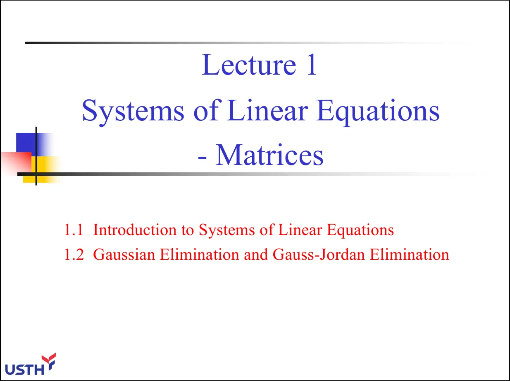
Title slide. Chapter 1 has two sections: 1.1 Introduction to systems of linear equations and 1.2 Gaussian elimination and Gauss-Jordan elimination. Everything in this course (determinants, vector spaces, eigenvalues) will rest on being able to solve $Ax=b$ quickly and correctly.
Slide tiêu đề. Chương 1 có hai mục: 1.1 Giới thiệu hệ phương trình tuyến tính và 1.2 Khử Gauss và khử Gauss-Jordan. Mọi thứ trong khóa học (định thức, không gian vectơ, trị riêng) đều dựa trên việc giải $Ax=b$ nhanh và đúng.
1.1 Linear equations in $n$ variables · 1.1 Phương trình tuyến tính $n$ ẩn
★★★ Core · Cốt lõi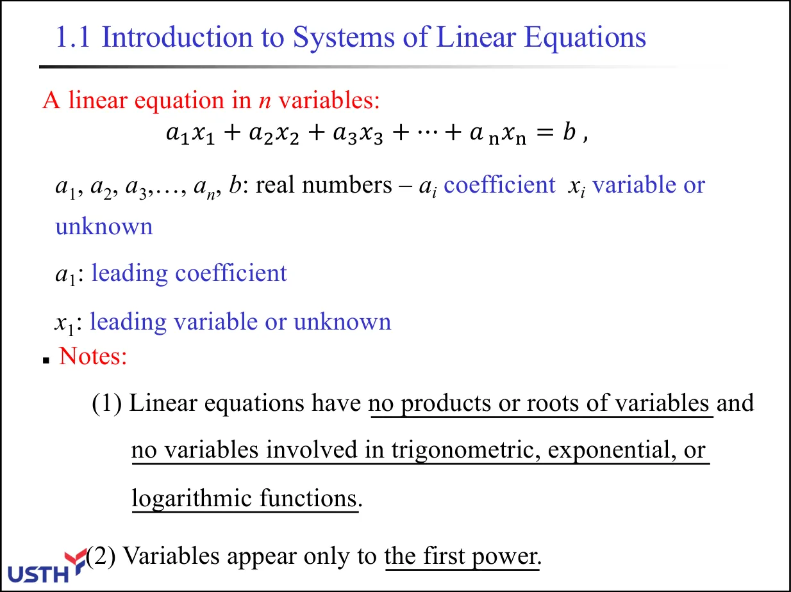
A linear equation in $n$ variables has the form $a_1x_1+a_2x_2+\cdots+a_nx_n=b$ with real numbers $a_i$ (the coefficients) and $b$. $a_1$ is the leading coefficient and $x_1$ the leading variable. Notes: (1) no products or roots of variables and no trigonometric, exponential or logarithmic functions of them; (2) every variable appears only to the first power.
Phương trình tuyến tính $n$ ẩn có dạng $a_1x_1+a_2x_2+\cdots+a_nx_n=b$ với các số thực $a_i$ (hệ số) và $b$. $a_1$ là hệ số dẫn đầu và $x_1$ là biến dẫn đầu. Lưu ý: (1) không có tích hay căn của các biến và không có hàm lượng giác, mũ hay logarit của chúng; (2) mọi biến chỉ xuất hiện ở lũy thừa bậc nhất.
Decide which of $2x-3y+\sqrt5z=1$, $xy-z=0$, $\sin x+y=2$, $\frac1x+y=4$ are linear.
Xác định phương trình nào trong $2x-3y+\sqrt5z=1$, $xy-z=0$, $\sin x+y=2$, $\frac1x+y=4$ là tuyến tính.
Answer and solution · Đáp án và lời giải
Answer · Đáp án: only $2x-3y+\sqrt5z=1$
The first has constant coefficients and every variable to the first power. $xy$ is a product of variables, $\sin x$ is a trigonometric function of a variable, and $\frac1x=x^{-1}$ is not the first power: the other three are nonlinear. (Test: a linear expression has all second derivatives equal to $0$.)
Phương trình đầu có hệ số hằng và mọi biến ở bậc nhất. $xy$ là tích các biến, $\sin x$ là hàm lượng giác của biến và $\frac1x=x^{-1}$ không phải bậc nhất: ba phương trình còn lại phi tuyến. (Kiểm tra: biểu thức tuyến tính có mọi đạo hàm cấp hai bằng $0$.)
Example 1: linear or nonlinear? · Ví dụ 1: tuyến tính hay phi tuyến?
★★★ Core · Cốt lõi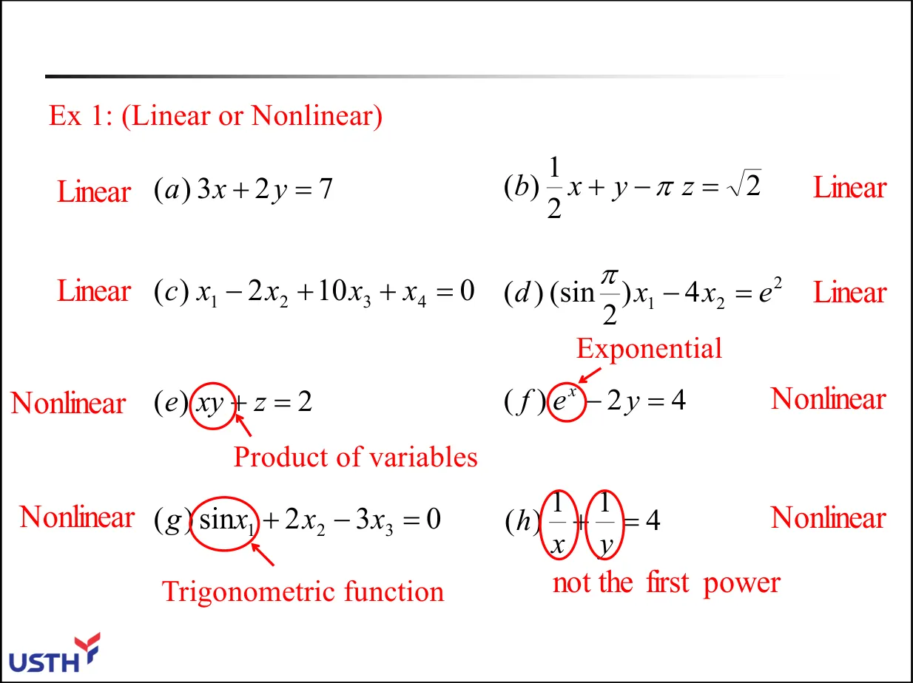
The slide classifies eight equations. Linear: (a) $3x+2y=7$; (b) $\frac12x+y-\pi z=\sqrt2$ (the coefficients $\frac12,\pi,\sqrt2$ are just numbers, even irrational); (c) $x_1-2x_2+10x_3+x_4=0$; (d) $\left(\sin\frac\pi2\right)x_1-4x_2=e^2$ (the coefficient $\sin\frac\pi2=1$ is a number and $e^2$ is a constant). Nonlinear: (e) $xy+z=2$ (product of variables); (f) $e^x-2y=4$ (exponential of a variable); (g) $\sin x_1+2x_2-3x_3=0$ (trigonometric function of a variable); (h) $\frac1x+\frac1y=4$ (not the first power). What matters is how the variables appear, never how ugly the coefficients are.
Slide phân loại tám phương trình. Tuyến tính: (a) $3x+2y=7$; (b) $\frac12x+y-\pi z=\sqrt2$ (các hệ số $\frac12,\pi,\sqrt2$ chỉ là số, kể cả vô tỉ); (c) $x_1-2x_2+10x_3+x_4=0$; (d) $\left(\sin\frac\pi2\right)x_1-4x_2=e^2$ (hệ số $\sin\frac\pi2=1$ là một số và $e^2$ là hằng). Phi tuyến: (e) $xy+z=2$ (tích các biến); (f) $e^x-2y=4$ (hàm mũ của biến); (g) $\sin x_1+2x_2-3x_3=0$ (hàm lượng giác của biến); (h) $\frac1x+\frac1y=4$ (không phải bậc nhất). Điều quan trọng là các biến xuất hiện thế nào, chứ không phải hệ số xấu đến đâu.
Is $\left(\cos\pi\right)x_1+\ln2\cdot x_2-x_3=e$ linear? Is $x_1x_3+x_2=1$?
$\left(\cos\pi\right)x_1+\ln2\cdot x_2-x_3=e$ có tuyến tính không? $x_1x_3+x_2=1$ thì sao?
Answer and solution · Đáp án và lời giải
Answer · Đáp án: the first is linear (coefficients $-1,\ln2,-1$); the second is not
In the first, $\cos\pi=-1$ and $\ln2$ are numbers multiplying variables to the first power, and $e$ is a constant term: linear. In the second, $x_1x_3$ is a product of two variables: nonlinear.
Ở phương trình đầu, $\cos\pi=-1$ và $\ln2$ là các số nhân với biến bậc nhất, và $e$ là hằng số: tuyến tính. Ở phương trình sau, $x_1x_3$ là tích của hai biến: phi tuyến.
A solution and the solution set · Một nghiệm và tập nghiệm
★★★ Core · Cốt lõi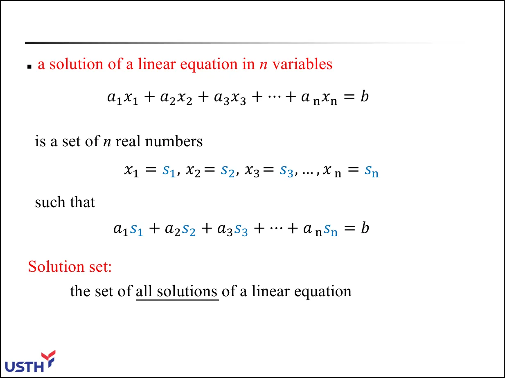
A solution of $a_1x_1+\cdots+a_nx_n=b$ is a list of $n$ real numbers $x_1=s_1,\dots,x_n=s_n$ such that $a_1s_1+\cdots+a_ns_n=b$. The solution set is the set of all solutions. To check a candidate, substitute it and see whether the equation is true.
Nghiệm của $a_1x_1+\cdots+a_nx_n=b$ là bộ $n$ số thực $x_1=s_1,\dots,x_n=s_n$ sao cho $a_1s_1+\cdots+a_ns_n=b$. Tập nghiệm là tập mọi nghiệm. Để kiểm tra một ứng viên, hãy thay vào và xem phương trình có đúng không.
Is $(1,2,3)$ a solution of $2x_1-x_2+x_3=3$? Is $(0,0,1)$?
$(1,2,3)$ có là nghiệm của $2x_1-x_2+x_3=3$ không? $(0,0,1)$ thì sao?
Answer and solution · Đáp án và lời giải
Answer · Đáp án: yes for $(1,2,3)$, no for $(0,0,1)$
$2(1)-2+3=3$ is true. For $(0,0,1)$: $0-0+1=1\ne3$.
$2(1)-2+3=3$ đúng. Với $(0,0,1)$: $0-0+1=1\ne3$.
Example 2: parametric representation of a solution set · Ví dụ 2: biểu diễn tham số của tập nghiệm
★★★ Core · Cốt lõi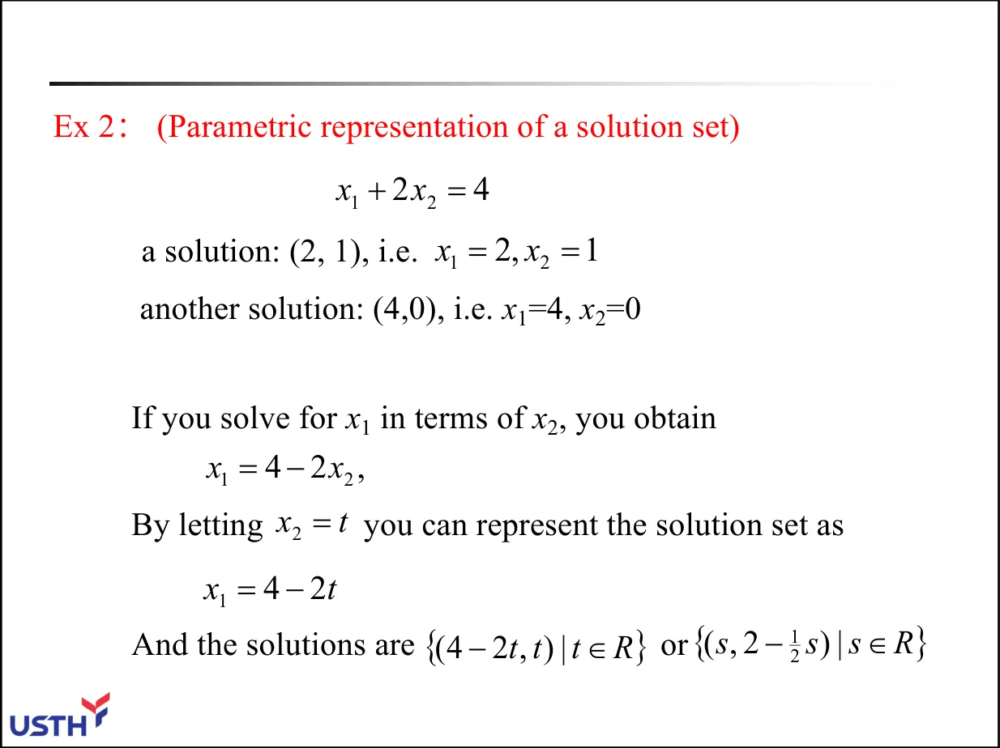
For $x_1+2x_2=4$ one equation in two unknowns has infinitely many solutions, e.g. $(2,1)$ and $(4,0)$. Solve for $x_1$: $x_1=4-2x_2$; let $x_2=t$ (the parameter, any real number). The solution set is $\{(4-2t,\,t)\mid t\in\mathbb R\}$. Solving for $x_2$ instead gives the equally valid $\{(s,\,2-\frac12s)\mid s\in\mathbb R\}$: a solution set has many parametrisations.
Với $x_1+2x_2=4$, một phương trình hai ẩn có vô số nghiệm, ví dụ $(2,1)$ và $(4,0)$. Giải theo $x_1$: $x_1=4-2x_2$; đặt $x_2=t$ (tham số, số thực bất kỳ). Tập nghiệm là $\{(4-2t,\,t)\mid t\in\mathbb R\}$. Giải theo $x_2$ thì được $\{(s,\,2-\frac12s)\mid s\in\mathbb R\}$ cũng đúng: một tập nghiệm có nhiều cách tham số hóa.
Give a parametric solution set of $3x-y=6$, and of $x+y+z=3$ (two parameters).
Cho tập nghiệm tham số của $3x-y=6$ và của $x+y+z=3$ (hai tham số).
Answer and solution · Đáp án và lời giải
Answer · Đáp án: $\{(t,3t-6)\}$ and $\{(3-s-t,\,s,\,t)\}$
First: $y=3x-6$, let $x=t$. Second: one equation, three unknowns, so two free variables: let $y=s$, $z=t$ and $x=3-s-t$. The number of parameters equals the number of unknowns minus the number of independent equations.
Phương trình đầu: $y=3x-6$, đặt $x=t$. Phương trình sau: một phương trình ba ẩn nên có hai biến tự do: đặt $y=s$, $z=t$ và $x=3-s-t$. Số tham số bằng số ẩn trừ số phương trình độc lập.
Systems of $m$ equations in $n$ variables · Hệ $m$ phương trình $n$ ẩn
★★★ Core · Cốt lõi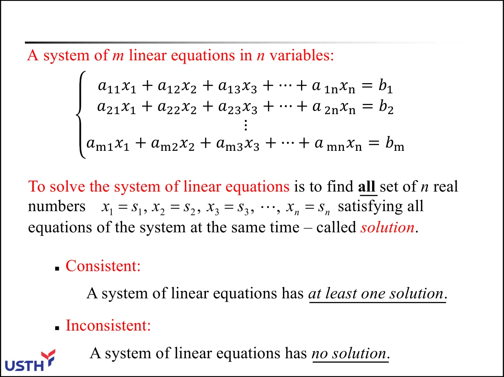
A system of $m$ linear equations in $n$ variables lists $m$ equations $a_{i1}x_1+\cdots+a_{in}x_n=b_i$. To solve it is to find all $n$-tuples $(s_1,\dots,s_n)$ that satisfy all equations at the same time. A system is consistent if it has at least one solution and inconsistent if it has none. Note the double $a_{ij}$: first index = equation (row), second index = variable (column).
Hệ $m$ phương trình tuyến tính $n$ ẩn liệt kê $m$ phương trình $a_{i1}x_1+\cdots+a_{in}x_n=b_i$. Giải hệ là tìm mọi bộ $n$ số $(s_1,\dots,s_n)$ thỏa mọi phương trình cùng lúc. Hệ nhất quán (có nghiệm) nếu có ít nhất một nghiệm và không nhất quán (vô nghiệm) nếu không có nghiệm nào. Chú ý chỉ số kép $a_{ij}$: chỉ số đầu = phương trình (hàng), chỉ số sau = biến (cột).
Classify as consistent or inconsistent: $\{x+y=2,\ x-y=0\}$ and $\{x+y=1,\ 2x+2y=3\}$.
Phân loại nhất quán hay không: $\{x+y=2,\ x-y=0\}$ và $\{x+y=1,\ 2x+2y=3\}$.
Answer and solution · Đáp án và lời giải
Answer · Đáp án: the first is consistent ($x=y=1$); the second is inconsistent
Adding the first pair gives $2x=2$, so $x=1$ and $y=1$. In the second, doubling the first equation gives $2x+2y=2$, which contradicts $2x+2y=3$.
Cộng cặp phương trình đầu được $2x=2$, nên $x=1$ và $y=1$. Ở hệ sau, nhân đôi phương trình đầu được $2x+2y=2$, mâu thuẫn với $2x+2y=3$.
Three possible outcomes · Ba kết quả có thể xảy ra
★★★ Core · Cốt lõi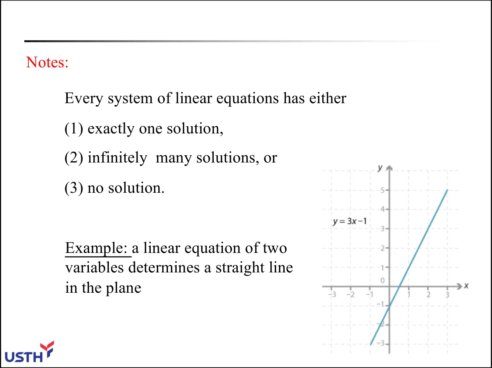
Every system of linear equations has exactly one solution, infinitely many solutions, or no solution (never exactly two or three). Geometric reason: one linear equation in two unknowns is a line in the plane, and two lines meet in a point, coincide, or are parallel. The figure on the slide shows the line $y=3x-1$.
Mọi hệ phương trình tuyến tính có đúng một nghiệm, vô số nghiệm, hoặc vô nghiệm (không bao giờ đúng hai hay ba nghiệm). Lý do hình học: một phương trình tuyến tính hai ẩn là một đường thẳng trong mặt phẳng, và hai đường thẳng cắt nhau tại một điểm, trùng nhau hoặc song song. Hình trên slide vẽ đường thẳng $y=3x-1$.
This trichotomy is asked as a true/false or multiple-choice question; it is also the reason every later theorem talks about the number of solutions as 0, 1 or $\infty$.
Sự phân loại ba trường hợp này hay được hỏi dưới dạng đúng/sai hoặc trắc nghiệm; đó cũng là lý do mọi định lý sau nói về số nghiệm là 0, 1 hoặc $\infty$.
Why can a system with two different solutions $u$ and $v$ never have only those two? Check with $x+y=2$, $u=(2,0)$, $v=(0,2)$.
Vì sao hệ có hai nghiệm khác nhau $u$ và $v$ không thể chỉ có hai nghiệm đó? Kiểm tra với $x+y=2$, $u=(2,0)$, $v=(0,2)$.
Answer and solution · Đáp án và lời giải
Answer · Đáp án: every $(1-\lambda)u+\lambda v$ is also a solution
If $u$ and $v$ both satisfy the equations then so does $(1-\lambda)u+\lambda v$ for every real $\lambda$ (each equation is linear). For $\lambda=\frac12$ we get $(1,1)$: $1+1=2$ ✓. All the points of the line through $u$ and $v$ are solutions, so there are infinitely many.
Nếu $u$ và $v$ cùng thỏa các phương trình thì $(1-\lambda)u+\lambda v$ cũng thỏa với mọi $\lambda$ thực (mỗi phương trình là tuyến tính). Với $\lambda=\frac12$ ta được $(1,1)$: $1+1=2$ ✓. Mọi điểm của đường thẳng qua $u$ và $v$ đều là nghiệm, nên có vô số nghiệm.
Example 4: geometry of $2\times2$ systems · Ví dụ 4: hình học của hệ $2\times2$
★★★ Core · Cốt lõi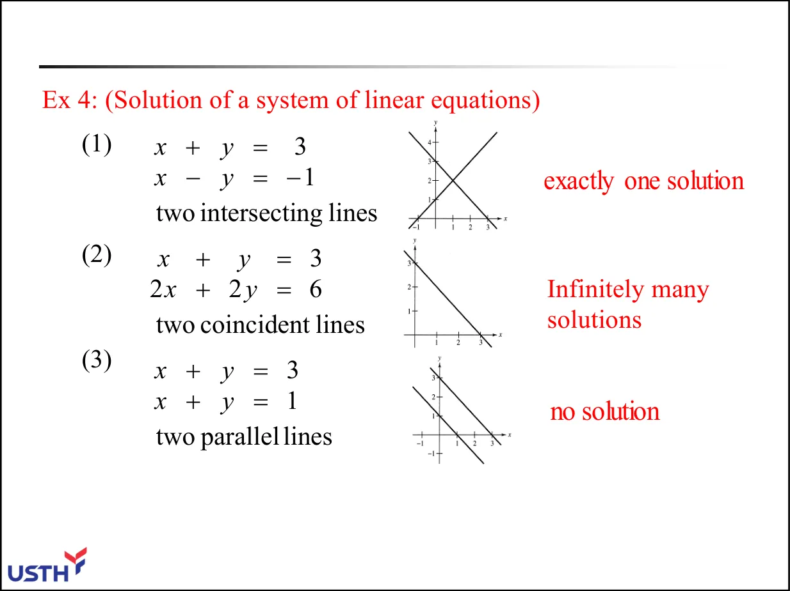
Three systems, three pictures. (1) $x+y=3,\ x-y=-1$: two intersecting lines, exactly one solution $(1,2)$. (2) $x+y=3,\ 2x+2y=6$: two coincident lines (the second equation is twice the first), infinitely many solutions. (3) $x+y=3,\ x+y=1$: two parallel lines, no solution.
Ba hệ, ba hình. (1) $x+y=3,\ x-y=-1$: hai đường thẳng cắt nhau, đúng một nghiệm $(1,2)$. (2) $x+y=3,\ 2x+2y=6$: hai đường thẳng trùng nhau (phương trình thứ hai gấp đôi phương trình đầu), vô số nghiệm. (3) $x+y=3,\ x+y=1$: hai đường thẳng song song, vô nghiệm.
Without solving, say how many solutions: $\{x-2y=1,\ 3x-6y=3\}$, $\{x-2y=1,\ 3x-6y=4\}$, $\{2x+y=1,\ x-y=2\}$.
Không giải, cho biết số nghiệm: $\{x-2y=1,\ 3x-6y=3\}$, $\{x-2y=1,\ 3x-6y=4\}$, $\{2x+y=1,\ x-y=2\}$.
Answer and solution · Đáp án và lời giải
Answer · Đáp án: infinitely many, none, exactly one
First: the second equation is $3\times$ the first: same line. Second: the left sides are proportional ($3x-6y=3(x-2y)$) but the right sides are not ($4\ne3\cdot1$): parallel lines. Third: the coefficient rows $(2,1)$ and $(1,-1)$ are not proportional: the lines cross in one point.
Hệ 1: phương trình hai gấp $3$ lần phương trình một: cùng một đường thẳng. Hệ 2: vế trái tỉ lệ ($3x-6y=3(x-2y)$) nhưng vế phải không ($4\ne3\cdot1$): hai đường song song. Hệ 3: các hàng hệ số $(2,1)$ và $(1,-1)$ không tỉ lệ: hai đường cắt nhau tại một điểm.
Example 5: back substitution ($2$ variables) · Ví dụ 5: thế ngược (2 ẩn)
★★ Important · Quan trọng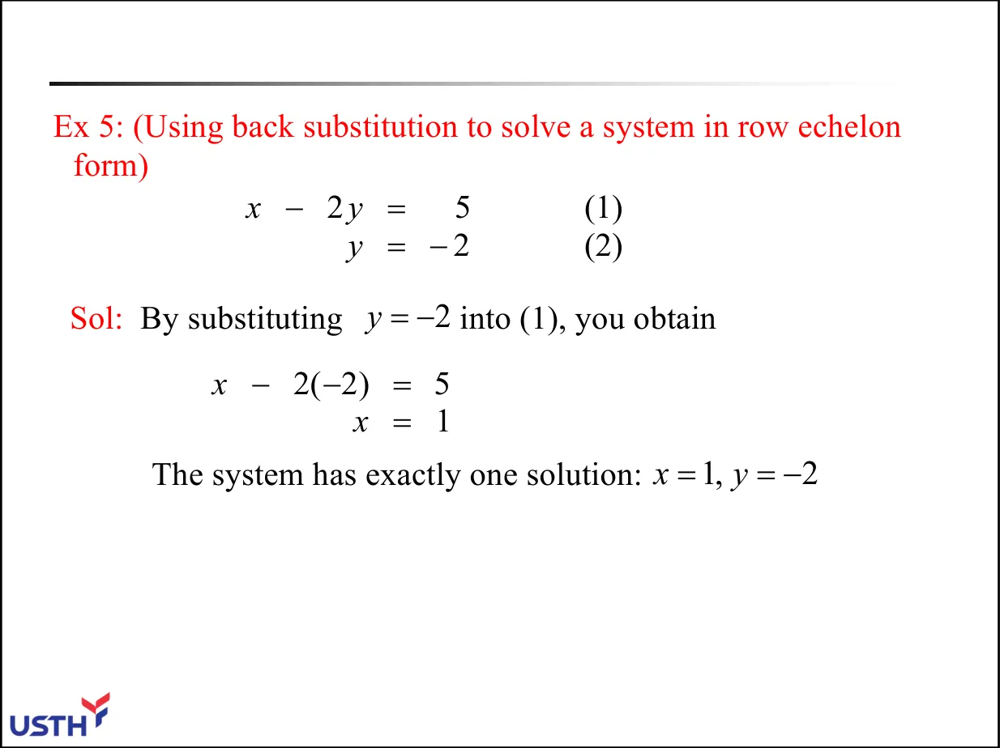
The system $x-2y=5\ (1)$, $y=-2\ (2)$ is already in row-echelon form (a triangle): the last equation has one variable. Substitute $y=-2$ into (1): $x-2(-2)=5$, so $x=1$. The system has exactly one solution $x=1$, $y=-2$. This back substitution is the finishing step of every elimination.
Hệ $x-2y=5\ (1)$, $y=-2\ (2)$ đã ở dạng bậc thang (hình tam giác): phương trình cuối chỉ có một biến. Thế $y=-2$ vào (1): $x-2(-2)=5$, nên $x=1$. Hệ có đúng một nghiệm $x=1$, $y=-2$. Phép thế ngược này là bước kết thúc của mọi phép khử.
Example 6: back substitution ($3$ variables) · Ví dụ 6: thế ngược (3 ẩn)
★★★ Core · Cốt lõi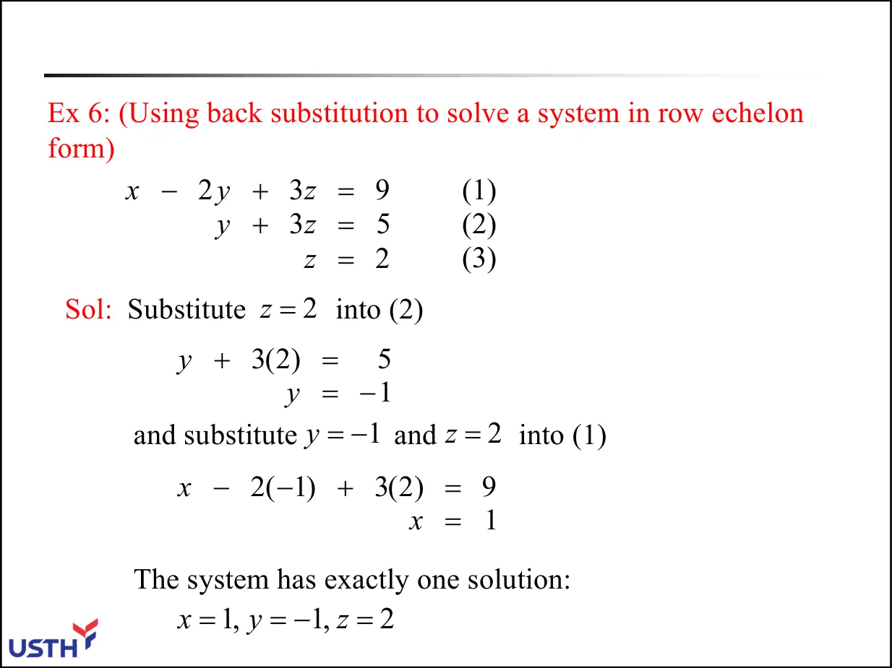
$x-2y+3z=9$, $y+3z=5$, $z=2$. Work from the bottom up: $z=2$; into (2): $y+6=5$, so $y=-1$; into (1): $x+2+6=9$, so $x=1$. Exactly one solution: $x=1$, $y=-1$, $z=2$. Solve the last equation first, then climb.
$x-2y+3z=9$, $y+3z=5$, $z=2$. Làm từ dưới lên: $z=2$; thế vào (2): $y+6=5$, nên $y=-1$; thế vào (1): $x+2+6=9$, nên $x=1$. Đúng một nghiệm: $x=1$, $y=-1$, $z=2$. Giải phương trình cuối trước, rồi leo lên.
Solve by back substitution: $x+2y-z=3$, $y+z=4$, $z=1$.
Giải bằng thế ngược: $x+2y-z=3$, $y+z=4$, $z=1$.
Answer and solution · Đáp án và lời giải
Answer · Đáp án: $(x,y,z)=(-2,3,1)$
$z=1$; $y+1=4$ gives $y=3$; $x+6-1=3$ gives $x=-2$. Check in the first equation: $-2+6-1=3$ ✓.
$z=1$; $y+1=4$ cho $y=3$; $x+6-1=3$ cho $x=-2$. Kiểm tra ở phương trình đầu: $-2+6-1=3$ ✓.
Equivalent systems and the three elimination operations · Hệ tương đương và ba phép khử
★★★ Core · Cốt lõi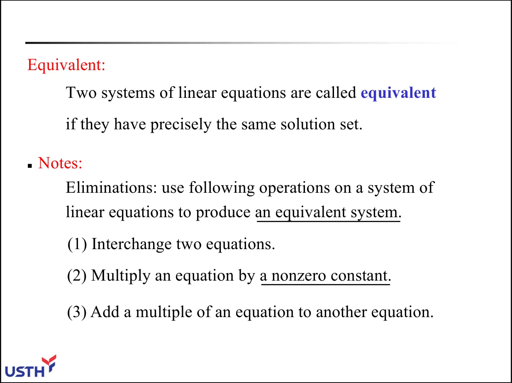
Two systems are equivalent if they have precisely the same solution set. Three operations turn a system into an equivalent one: (1) interchange two equations; (2) multiply an equation by a nonzero constant; (3) add a multiple of one equation to another. Elimination is the plan of using these to reach a triangular system we can read by back substitution. The word "nonzero" in (2) is essential: multiplying by $0$ would destroy information.
Hai hệ tương đương nếu chúng có đúng cùng một tập nghiệm. Ba phép biến đổi cho ta hệ tương đương: (1) đổi chỗ hai phương trình; (2) nhân một phương trình với hằng số khác không; (3) cộng bội của một phương trình vào phương trình khác. Khử là kế hoạch dùng các phép này để đến hệ tam giác đọc được bằng thế ngược. Chữ "khác không" ở (2) rất cần thiết: nhân với $0$ sẽ làm mất thông tin.
Everything in Lecture 1 is a consequence of this slide: row operations are legal because they preserve the solution set.
Mọi thứ trong Bài 1 đều là hệ quả của slide này: phép biến đổi hàng hợp lệ vì chúng bảo toàn tập nghiệm.
Apply $R_2-R_1\to R_2$ to $\{x+y=3,\ x-y=1\}$ and check that the solution set does not change.
Áp dụng $R_2-R_1\to R_2$ cho $\{x+y=3,\ x-y=1\}$ và kiểm tra tập nghiệm không đổi.
Answer and solution · Đáp án và lời giải
Answer · Đáp án: new system $\{x+y=3,\ -2y=-2\}$, same solution $(2,1)$
$R_2-R_1$: $(x-y)-(x+y)=1-3$, i.e. $-2y=-2$. Both systems have the unique solution $x=2,\ y=1$.
$R_2-R_1$: $(x-y)-(x+y)=1-3$, tức $-2y=-2$. Cả hai hệ có nghiệm duy nhất $x=2,\ y=1$.
Example 7: a consistent system, first steps · Ví dụ 7: hệ có nghiệm, các bước đầu
★★★ Core · Cốt lõi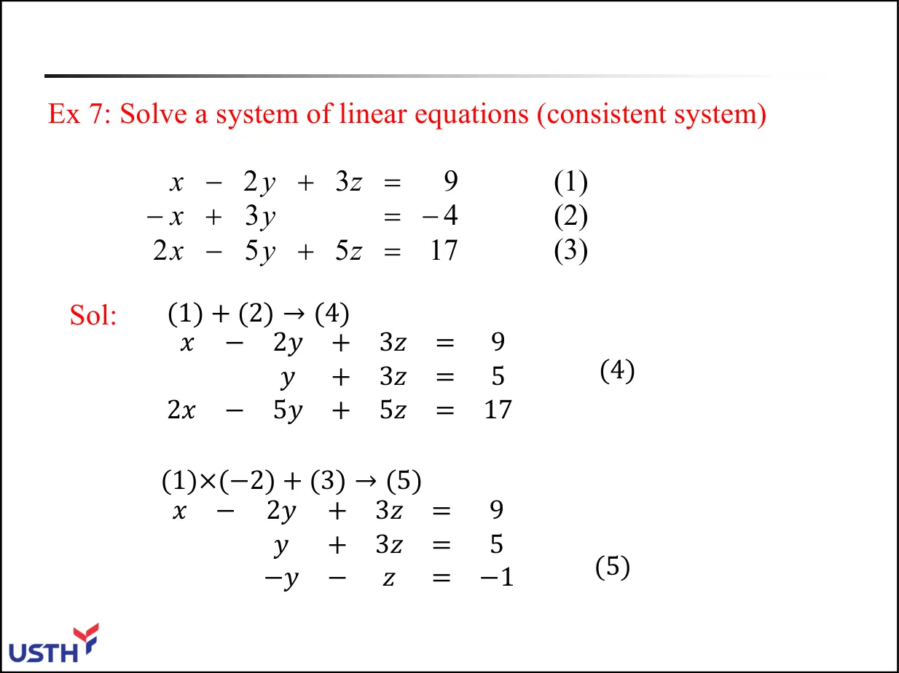
Solve $x-2y+3z=9\ (1)$, $-x+3y=-4\ (2)$, $2x-5y+5z=17\ (3)$. Goal: eliminate $x$ from (2) and (3). (1) + (2) → (4): $y+3z=5$. (1)×(−2) + (3) → (5): $-y-z=-1$. The system is now $x-2y+3z=9$, $y+3z=5$, $-y-z=-1$.
Giải $x-2y+3z=9\ (1)$, $-x+3y=-4\ (2)$, $2x-5y+5z=17\ (3)$. Mục tiêu: khử $x$ khỏi (2) và (3). (1) + (2) → (4): $y+3z=5$. (1)×(−2) + (3) → (5): $-y-z=-1$. Hệ trở thành $x-2y+3z=9$, $y+3z=5$, $-y-z=-1$.
Example 7: finishing · Ví dụ 7: hoàn tất
★★★ Core · Cốt lõi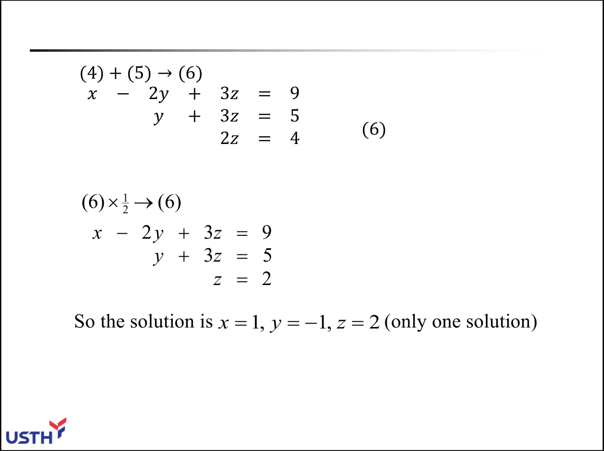
Now eliminate $y$ from the third equation: (4) + (5) → (6): $2z=4$. Multiply by $\frac12$: $z=2$. Back substitution gives $y=-1$ and $x=1$. Only one solution: $x=1$, $y=-1$, $z=2$. The pattern is always the same: one variable at a time, from left to right, down the columns.
Bây giờ khử $y$ khỏi phương trình thứ ba: (4) + (5) → (6): $2z=4$. Nhân với $\frac12$: $z=2$. Thế ngược cho $y=-1$ và $x=1$. Chỉ có một nghiệm: $x=1$, $y=-1$, $z=2$. Quy luật luôn giống nhau: từng biến một, từ trái sang phải, theo từng cột.
Solve $x+y+z=6$, $2y+5z=-4$, $2x+5y-z=27$ by elimination.
Giải $x+y+z=6$, $2y+5z=-4$, $2x+5y-z=27$ bằng phép khử.
Answer and solution · Đáp án và lời giải
Answer · Đáp án: $(x,y,z)=(5,3,-2)$
$R_3-2R_1$: $3y-3z=15$, i.e. $y-z=5$. With $2y+5z=-4$: from $y=z+5$, $2z+10+5z=-4$, $7z=-14$, $z=-2$, $y=3$, then $x=6-3+2=5$. Check in the third: $10+15+2=27$ ✓.
$R_3-2R_1$: $3y-3z=15$, tức $y-z=5$. Cùng $2y+5z=-4$: từ $y=z+5$, $2z+10+5z=-4$, $7z=-14$, $z=-2$, $y=3$, rồi $x=6-3+2=5$. Kiểm tra ở phương trình thứ ba: $10+15+2=27$ ✓.
Example 8: an inconsistent system, first steps · Ví dụ 8: hệ vô nghiệm, các bước đầu
★★★ Core · Cốt lõi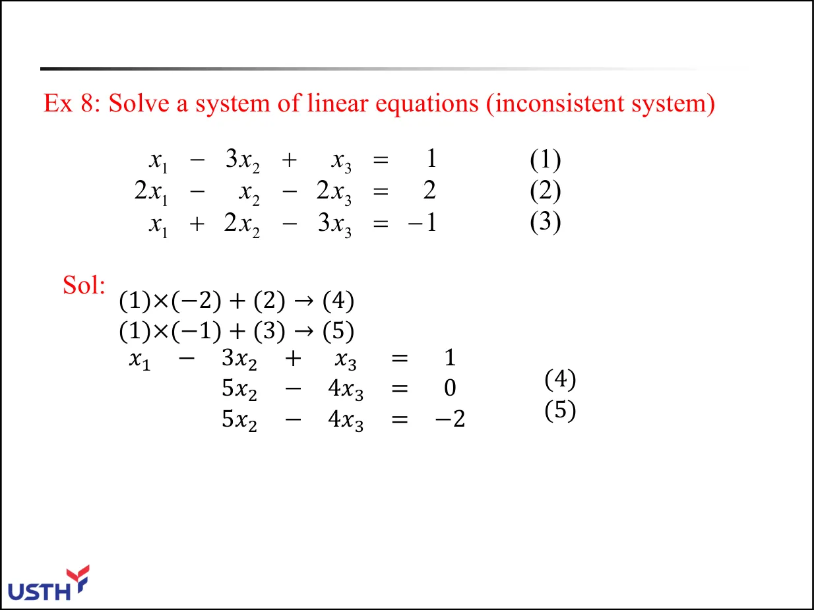
Solve $x_1-3x_2+x_3=1\ (1)$, $2x_1-x_2-2x_3=2\ (2)$, $x_1+2x_2-3x_3=-1\ (3)$. (1)×(−2) + (2) → (4): $5x_2-4x_3=0$. (1)×(−1) + (3) → (5): $5x_2-4x_3=-2$. Notice that (4) and (5) have identical left-hand sides but different right-hand sides.
Giải $x_1-3x_2+x_3=1\ (1)$, $2x_1-x_2-2x_3=2\ (2)$, $x_1+2x_2-3x_3=-1\ (3)$. (1)×(−2) + (2) → (4): $5x_2-4x_3=0$. (1)×(−1) + (3) → (5): $5x_2-4x_3=-2$. Hãy để ý (4) và (5) có vế trái giống hệt nhưng vế phải khác nhau.
Example 8: the false statement $0=-2$ · Ví dụ 8: mệnh đề sai $0=-2$
★★★ Core · Cốt lõi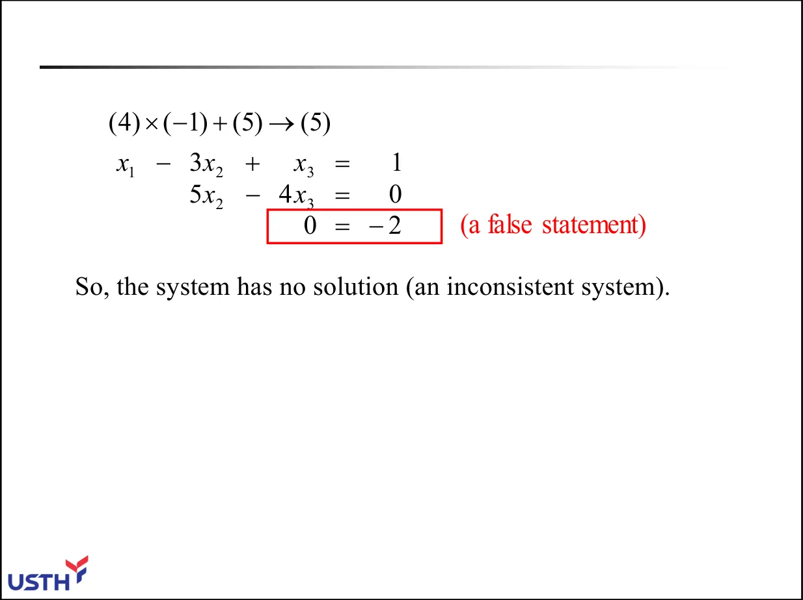
(4)×(−1) + (5) → (5): $0=-2$, a false statement. No values of the variables can make it true, so the system has no solution: it is inconsistent. In matrix language this is a row $[\,0\ 0\ 0\mid-2\,]$, the signature of inconsistency.
(4)×(−1) + (5) → (5): $0=-2$, một mệnh đề sai. Không giá trị nào của các biến làm nó đúng, nên hệ vô nghiệm: không nhất quán. Trong ngôn ngữ ma trận đó là hàng $[\,0\ 0\ 0\mid-2\,]$, dấu hiệu của sự vô nghiệm.
Show that $x-y+2z=1$, $2x-2y+4z=5$, $x+y=3$ has no solution.
Chứng tỏ $x-y+2z=1$, $2x-2y+4z=5$, $x+y=3$ vô nghiệm.
Answer and solution · Đáp án và lời giải
Answer · Đáp án: inconsistent (the elimination reaches $0=3$)
$R_2-2R_1$: $2x-2y+4z-(2x-2y+4z)=5-2$, i.e. $0=3$, a false statement. So the first two equations already contradict each other whatever the third says.
$R_2-2R_1$: $2x-2y+4z-(2x-2y+4z)=5-2$, tức $0=3$, mệnh đề sai. Vậy hai phương trình đầu đã mâu thuẫn nhau dù phương trình thứ ba là gì.
Example 9: infinitely many solutions, elimination · Ví dụ 9: vô số nghiệm, phép khử
★★★ Core · Cốt lõi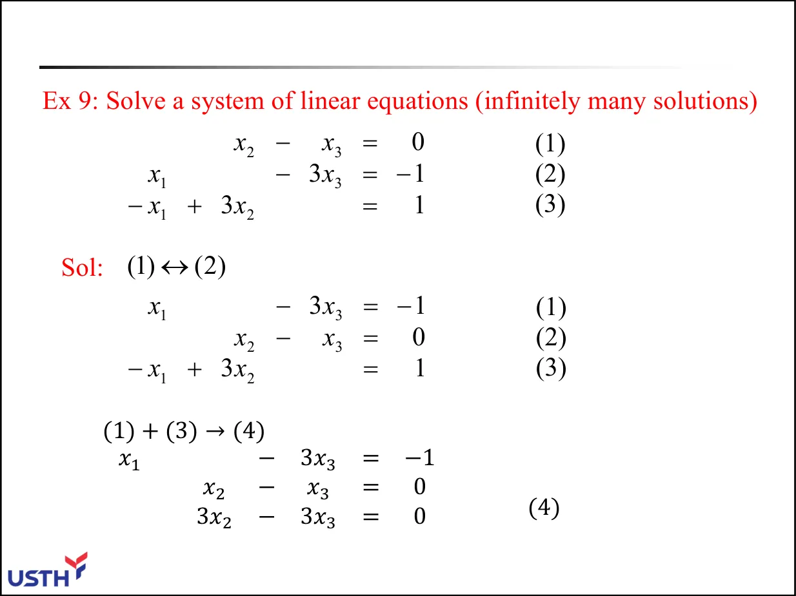
Solve $x_2-x_3=0\ (1)$, $x_1-3x_3=-1\ (2)$, $-x_1+3x_2=1\ (3)$. First interchange (1) and (2) to put an $x_1$ equation on top (operation type 1). Then (1) + (3) → (4): $3x_2-3x_3=0$. The system is $x_1-3x_3=-1$, $x_2-x_3=0$, $3x_2-3x_3=0$.
Giải $x_2-x_3=0\ (1)$, $x_1-3x_3=-1\ (2)$, $-x_1+3x_2=1\ (3)$. Trước hết đổi chỗ (1) và (2) để có phương trình chứa $x_1$ ở trên cùng (phép loại 1). Rồi (1) + (3) → (4): $3x_2-3x_3=0$. Hệ là $x_1-3x_3=-1$, $x_2-x_3=0$, $3x_2-3x_3=0$.
Example 9: the solution set · Ví dụ 9: tập nghiệm
★★★ Core · Cốt lõi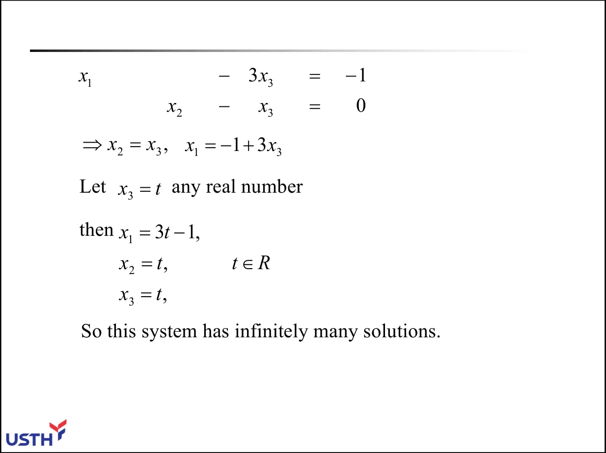
Subtracting $3\times$(2) from (4) leaves $0=0$, which is always true: one equation was redundant. We are left with $x_1-3x_3=-1$ and $x_2-x_3=0$, so $x_2=x_3$ and $x_1=-1+3x_3$. Let $x_3=t$: $x_1=3t-1$, $x_2=t$, $x_3=t$, $t\in\mathbb R$: infinitely many solutions, a line in space. A row $0=0$ means "no information", not "no solution".
Lấy (4) trừ $3\times$(2) còn $0=0$, luôn đúng: một phương trình là thừa. Còn lại $x_1-3x_3=-1$ và $x_2-x_3=0$, nên $x_2=x_3$ và $x_1=-1+3x_3$. Đặt $x_3=t$: $x_1=3t-1$, $x_2=t$, $x_3=t$, $t\in\mathbb R$: vô số nghiệm, một đường thẳng trong không gian. Hàng $0=0$ nghĩa là "không có thông tin", không phải "vô nghiệm".
Solve $x-z=1$, $y+2z=2$, $x+y+z=3$ and describe the solution set.
Giải $x-z=1$, $y+2z=2$, $x+y+z=3$ và mô tả tập nghiệm.
Answer and solution · Đáp án và lời giải
Answer · Đáp án: $(x,y,z)=(1+t,\ 2-2t,\ t)$, $t\in\mathbb R$
Add the first two: $x+y+z=3$, which is the third equation, so the third is redundant ($0=0$). Let $z=t$: $x=1+t$, $y=2-2t$. A line of solutions.
Cộng hai phương trình đầu: $x+y+z=3$, chính là phương trình thứ ba, nên phương trình thứ ba thừa ($0=0$). Đặt $z=t$: $x=1+t$, $y=2-2t$. Một đường thẳng nghiệm.
1.2 Matrices: size, entries, main diagonal · 1.2 Ma trận: cỡ, phần tử, đường chéo chính
★★★ Core · Cốt lõi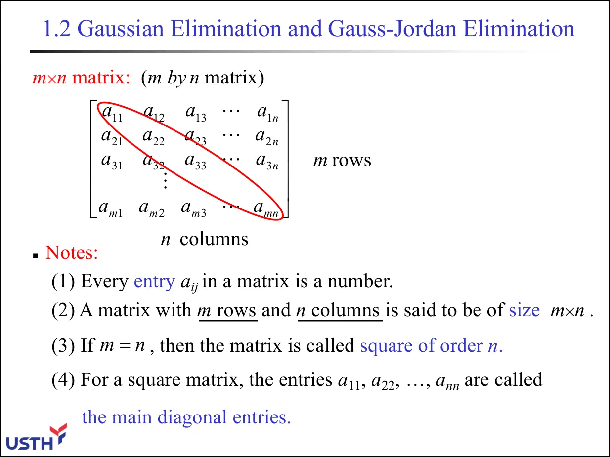
An $m\times n$ matrix ($m$ by $n$) is a rectangular array of numbers with $m$ rows and $n$ columns. Notes: (1) each entry $a_{ij}$ is a number (row $i$, column $j$); (2) the matrix has size $m\times n$; (3) if $m=n$ it is square of order $n$; (4) in a square matrix the entries $a_{11},a_{22},\dots,a_{nn}$ form the main diagonal. Always say "rows × columns".
Ma trận $m\times n$ ($m$ nhân $n$) là một bảng số hình chữ nhật có $m$ hàng và $n$ cột. Lưu ý: (1) mỗi phần tử $a_{ij}$ là một số (hàng $i$, cột $j$); (2) ma trận có cỡ $m\times n$; (3) nếu $m=n$ thì nó vuông cấp $n$; (4) trong ma trận vuông các phần tử $a_{11},a_{22},\dots,a_{nn}$ tạo thành đường chéo chính. Luôn nói "hàng × cột".
Build the $3\times4$ matrix with $a_{ij}=i+j$. Find $a_{23}$ and the main-diagonal entries $a_{11},a_{22},a_{33}$.
Lập ma trận $3\times4$ với $a_{ij}=i+j$. Tìm $a_{23}$ và các phần tử đường chéo chính $a_{11},a_{22},a_{33}$.
Answer and solution · Đáp án và lời giải
Answer · Đáp án: $a_{23}=5$ and diagonal $2,4,6$
Rows $i=1,2,3$, columns $j=1,\dots,4$: $\begin{bmatrix}2&3&4&5\\3&4&5&6\\4&5&6&7\end{bmatrix}$. $a_{23}=2+3=5$; $a_{11}=2$, $a_{22}=4$, $a_{33}=6$.
Hàng $i=1,2,3$, cột $j=1,\dots,4$: $\begin{bmatrix}2&3&4&5\\3&4&5&6\\4&5&6&7\end{bmatrix}$. $a_{23}=2+3=5$; $a_{11}=2$, $a_{22}=4$, $a_{33}=6$.
Example 1: sizes of matrices · Ví dụ 1: cỡ của các ma trận
★★ Important · Quan trọng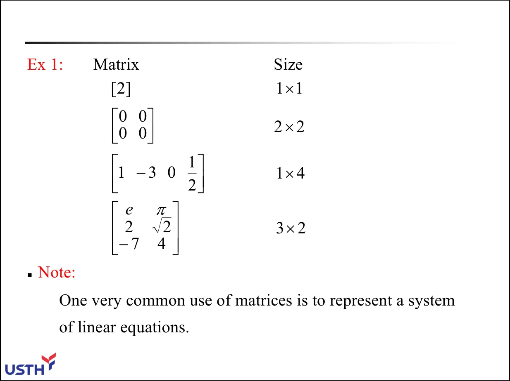
Sizes: $[2]$ is $1\times1$; $\begin{bmatrix}0&0\\0&0\end{bmatrix}$ is $2\times2$; $\begin{bmatrix}1&-3&0&\frac12\end{bmatrix}$ is $1\times4$ (a row matrix); $\begin{bmatrix}e&\pi\\2&\sqrt2\\-7&4\end{bmatrix}$ is $3\times2$. Note: one very common use of matrices is to represent a system of linear equations.
Cỡ: $[2]$ là $1\times1$; $\begin{bmatrix}0&0\\0&0\end{bmatrix}$ là $2\times2$; $\begin{bmatrix}1&-3&0&\frac12\end{bmatrix}$ là $1\times4$ (ma trận hàng); $\begin{bmatrix}e&\pi\\2&\sqrt2\\-7&4\end{bmatrix}$ là $3\times2$. Lưu ý: một công dụng rất phổ biến của ma trận là biểu diễn hệ phương trình tuyến tính.
Matrix form $Ax=b$ · Dạng ma trận $Ax=b$
★★★ Core · Cốt lõi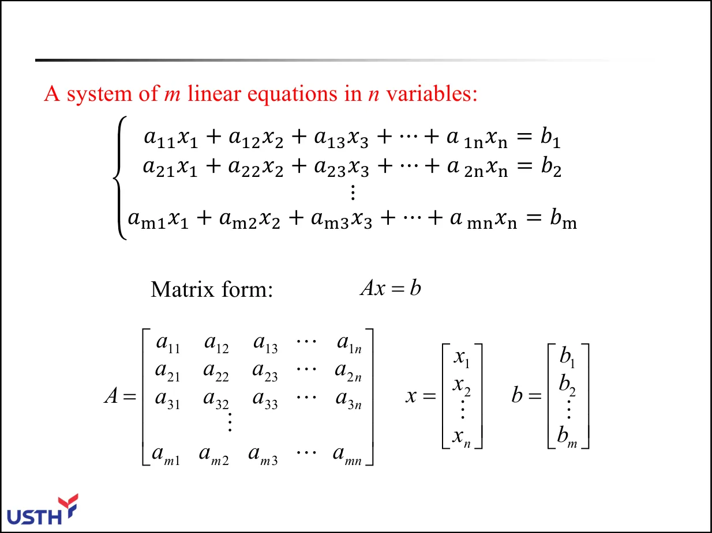
The system of $m$ equations in $n$ unknowns is written compactly as $Ax=b$, where $A$ is the $m\times n$ coefficient matrix, $x=(x_1,\dots,x_n)^T$ the column of unknowns and $b=(b_1,\dots,b_m)^T$ the column of constants. $Ax$ means: row $i$ of $A$ times the column $x$ gives the left side of equation $i$. This is the form used in the rest of the course.
Hệ $m$ phương trình $n$ ẩn được viết gọn thành $Ax=b$, trong đó $A$ là ma trận hệ số cỡ $m\times n$, $x=(x_1,\dots,x_n)^T$ là cột ẩn và $b=(b_1,\dots,b_m)^T$ là cột hằng số. $Ax$ nghĩa là: hàng $i$ của $A$ nhân cột $x$ cho vế trái của phương trình $i$. Đây là dạng dùng trong phần còn lại của khóa học.
Write $x+2y-z=3,\ 2x-y+3z=1$ as $Ax=b$ and check that $(1,1,0)$ is a solution.
Viết $x+2y-z=3,\ 2x-y+3z=1$ dưới dạng $Ax=b$ và kiểm tra $(1,1,0)$ là nghiệm.
Answer and solution · Đáp án và lời giải
Answer · Đáp án: $A=\begin{bmatrix}1&2&-1\\2&-1&3\end{bmatrix}$, $b=\begin{bmatrix}3\\1\end{bmatrix}$; $A(1,1,0)^T=b$
$A\begin{bmatrix}1\\1\\0\end{bmatrix}=\begin{bmatrix}1+2-0\\2-1+0\end{bmatrix}=\begin{bmatrix}3\\1\end{bmatrix}=b$ ✓.
$A\begin{bmatrix}1\\1\\0\end{bmatrix}=\begin{bmatrix}1+2-0\\2-1+0\end{bmatrix}=\begin{bmatrix}3\\1\end{bmatrix}=b$ ✓.
Coefficient matrix and augmented matrix · Ma trận hệ số và ma trận mở rộng
★★★ Core · Cốt lõi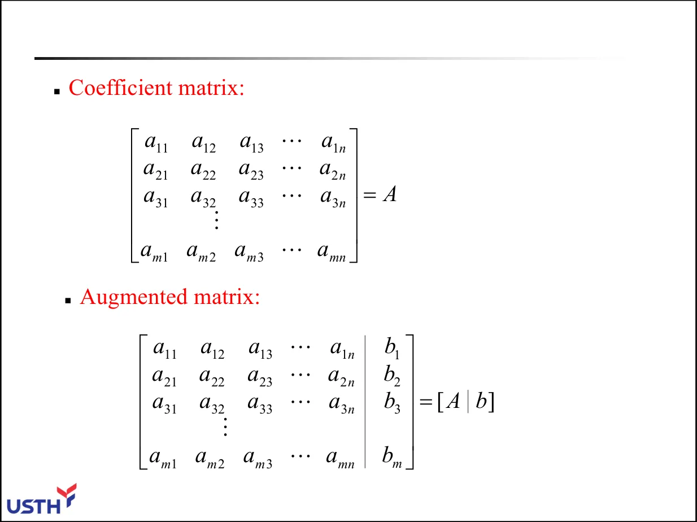
The coefficient matrix $A$ holds only the coefficients $a_{ij}$. The augmented matrix $[A\mid b]$ adds the column of constants after a vertical bar. All the work of elimination can be done on $[A\mid b]$, which saves writing the variables again and again; the vertical bar stands for the equals signs.
Ma trận hệ số $A$ chỉ chứa các hệ số $a_{ij}$. Ma trận mở rộng $[A\mid b]$ thêm cột hằng số sau một vạch đứng. Toàn bộ phép khử có thể làm trên $[A\mid b]$, đỡ phải viết lại các biến; vạch đứng thay cho dấu bằng.
Write the augmented matrix of $2x-y+z=4,\ x+3z=5,\ -y+2z=0$.
Viết ma trận mở rộng của $2x-y+z=4,\ x+3z=5,\ -y+2z=0$.
Answer and solution · Đáp án và lời giải
Answer · Đáp án: $\begin{bmatrix}2&-1&1&4\\1&0&3&5\\0&-1&2&0\end{bmatrix}$
Put the coefficients of $x,y,z$ in this order in each row, writing $0$ for a missing variable ($x+3z$ has no $y$; $-y+2z$ has no $x$), then the constants after the bar.
Đặt các hệ số của $x,y,z$ theo thứ tự này trong mỗi hàng, viết $0$ cho biến vắng mặt ($x+3z$ không có $y$; $-y+2z$ không có $x$), rồi các hằng số sau vạch.
Elementary row operations and row equivalence · Phép biến đổi sơ cấp theo hàng và tương đương hàng
★★★ Core · Cốt lõi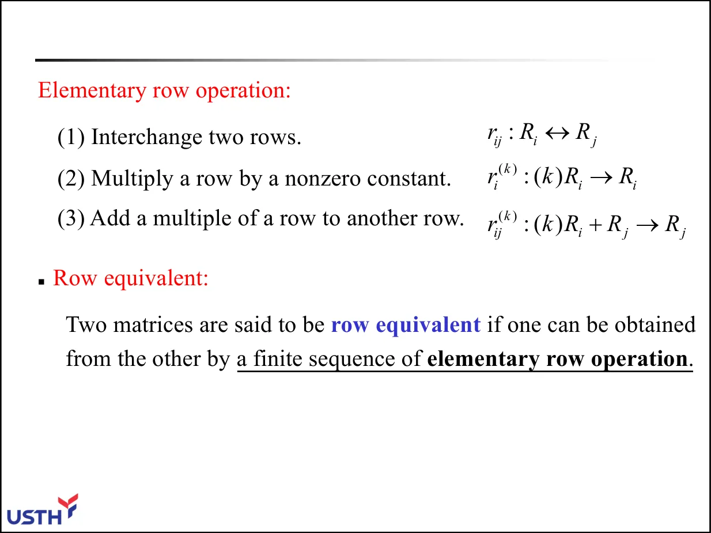
The three elementary row operations on a matrix are the matrix version of the elimination operations: (1) interchange two rows, $r_{ij}:R_i\leftrightarrow R_j$; (2) multiply a row by a nonzero constant, $r_i^{(k)}:(k)R_i\to R_i$; (3) add a multiple of a row to another row, $r_{ij}^{(k)}:(k)R_i+R_j\to R_j$. Two matrices are row equivalent if one is obtained from the other by a finite sequence of elementary row operations. Row-equivalent augmented matrices represent equivalent systems.
Ba phép biến đổi sơ cấp theo hàng trên ma trận là phiên bản ma trận của các phép khử: (1) đổi chỗ hai hàng, $r_{ij}:R_i\leftrightarrow R_j$; (2) nhân một hàng với hằng số khác không, $r_i^{(k)}:(k)R_i\to R_i$; (3) cộng bội của một hàng vào hàng khác, $r_{ij}^{(k)}:(k)R_i+R_j\to R_j$. Hai ma trận tương đương hàng nếu ma trận này nhận được từ ma trận kia bằng một dãy hữu hạn phép biến đổi sơ cấp theo hàng. Các ma trận mở rộng tương đương hàng biểu diễn các hệ tương đương.
Always write the operation you perform next to each arrow: it makes your work checkable and earns method marks.
Luôn ghi phép biến đổi bạn thực hiện cạnh mỗi mũi tên: bài làm kiểm tra được và được điểm phương pháp.
Apply $R_2-2R_1\to R_2$ to $\begin{bmatrix}1&2&3\\2&1&0\end{bmatrix}$ and state the operation in the slide's notation.
Áp dụng $R_2-2R_1\to R_2$ cho $\begin{bmatrix}1&2&3\\2&1&0\end{bmatrix}$ và ghi phép biến đổi theo ký hiệu của slide.
Answer and solution · Đáp án và lời giải
Answer · Đáp án: $\begin{bmatrix}1&2&3\\0&-3&-6\end{bmatrix}$, operation $r_{12}^{(-2)}$
Row 2 becomes $(2-2\cdot1,\ 1-2\cdot2,\ 0-2\cdot3)=(0,-3,-6)$. In the notation $r_{ij}^{(k)}:(k)R_i+R_j\to R_j$ this is $r_{12}^{(-2)}:(-2)R_1+R_2\to R_2$.
Hàng 2 trở thành $(2-2\cdot1,\ 1-2\cdot2,\ 0-2\cdot3)=(0,-3,-6)$. Theo ký hiệu $r_{ij}^{(k)}:(k)R_i+R_j\to R_j$ đây là $r_{12}^{(-2)}:(-2)R_1+R_2\to R_2$.
Example 2: three elementary row operations · Ví dụ 2: ba phép biến đổi sơ cấp theo hàng
★★★ Core · Cốt lõi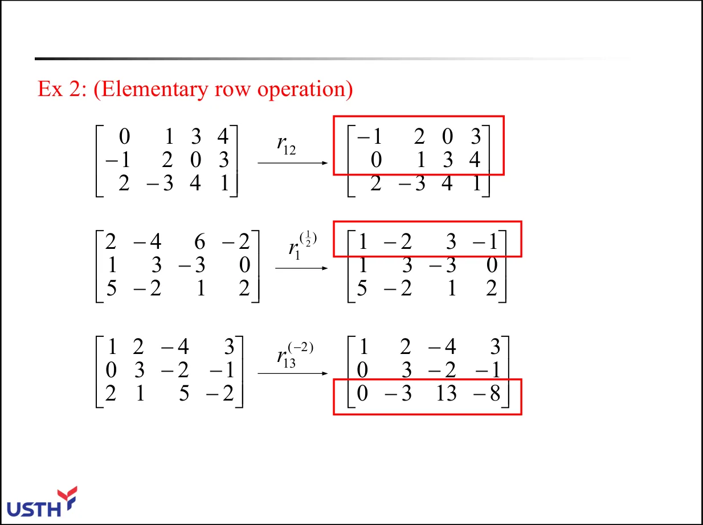
Three single operations: $r_{12}$ interchanges rows 1 and 2 of $\begin{bmatrix}0&1&3&4\\-1&2&0&3\\2&-3&4&1\end{bmatrix}$ to put a nonzero entry at the top; $r_1^{(1/2)}$ halves row 1 of $\begin{bmatrix}2&-4&6&-2\\1&3&-3&0\\5&-2&1&2\end{bmatrix}$ to create a leading $1$; $r_{13}^{(-2)}$ replaces $R_3$ by $R_3-2R_1$ in $\begin{bmatrix}1&2&-4&3\\0&3&-2&-1\\2&1&5&-2\end{bmatrix}$, giving the new third row $(0,-3,13,-8)$.
Ba phép đơn lẻ: $r_{12}$ đổi chỗ hàng 1 và 2 của $\begin{bmatrix}0&1&3&4\\-1&2&0&3\\2&-3&4&1\end{bmatrix}$ để đưa phần tử khác không lên trên; $r_1^{(1/2)}$ chia đôi hàng 1 của $\begin{bmatrix}2&-4&6&-2\\1&3&-3&0\\5&-2&1&2\end{bmatrix}$ để tạo số $1$ dẫn đầu; $r_{13}^{(-2)}$ thay $R_3$ bằng $R_3-2R_1$ trong $\begin{bmatrix}1&2&-4&3\\0&3&-2&-1\\2&1&5&-2\end{bmatrix}$, cho hàng thứ ba mới $(0,-3,13,-8)$.
Which single operation turns the third row $(2,1,5,-2)$ into $(0,-3,13,-8)$ using the first row $(1,2,-4,3)$?
Phép đơn nào biến hàng ba $(2,1,5,-2)$ thành $(0,-3,13,-8)$ khi dùng hàng một $(1,2,-4,3)$?
Answer and solution · Đáp án và lời giải
Answer · Đáp án: $R_3-2R_1\to R_3$
$(2,1,5,-2)-2(1,2,-4,3)=(2-2,\ 1-4,\ 5+8,\ -2-6)=(0,-3,13,-8)$ ✓.
$(2,1,5,-2)-2(1,2,-4,3)=(2-2,\ 1-4,\ 5+8,\ -2-6)=(0,-3,13,-8)$ ✓.
Example 3: solving with row operations, first steps · Ví dụ 3: giải bằng phép biến đổi hàng, các bước đầu
★★★ Core · Cốt lõi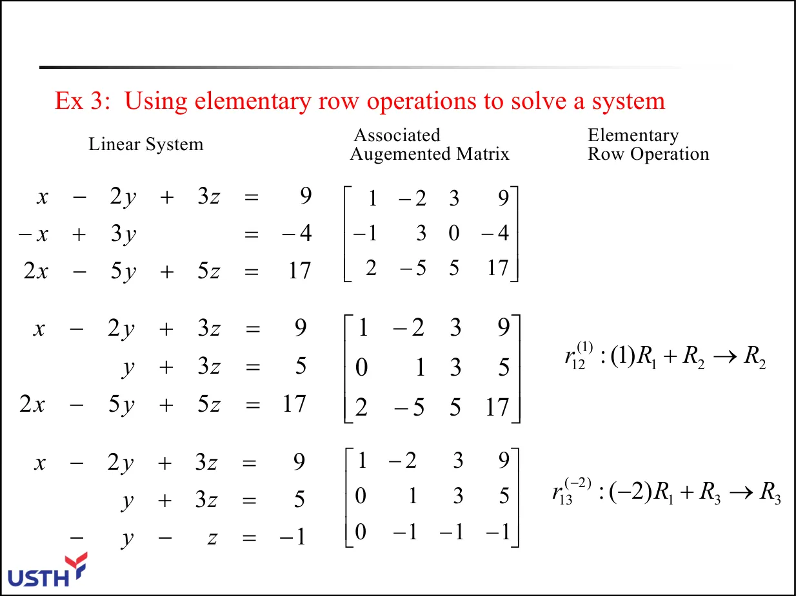
The same system as Example 7 of section 1.1 is solved side by side as a system and as an augmented matrix. Start with $\begin{bmatrix}1&-2&3&9\\-1&3&0&-4\\2&-5&5&17\end{bmatrix}$. $r_{12}^{(1)}:R_1+R_2\to R_2$ gives row 2 $=(0,1,3,5)$. $r_{13}^{(-2)}:-2R_1+R_3\to R_3$ gives row 3 $=(0,-1,-1,-1)$. Compare each row with the equation it came from.
Cùng hệ như Ví dụ 7 ở mục 1.1 được giải song song dưới dạng hệ phương trình và ma trận mở rộng. Bắt đầu với $\begin{bmatrix}1&-2&3&9\\-1&3&0&-4\\2&-5&5&17\end{bmatrix}$. $r_{12}^{(1)}:R_1+R_2\to R_2$ cho hàng 2 $=(0,1,3,5)$. $r_{13}^{(-2)}:-2R_1+R_3\to R_3$ cho hàng 3 $=(0,-1,-1,-1)$. Hãy so từng hàng với phương trình mà nó đến từ đó.
Example 3: finishing · Ví dụ 3: hoàn tất
★★★ Core · Cốt lõi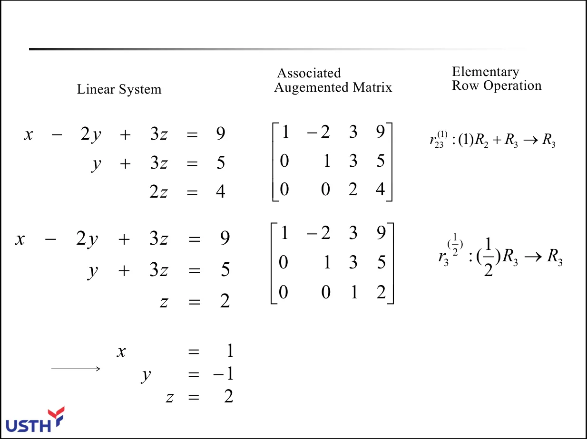
Next $r_{23}^{(1)}:R_2+R_3\to R_3$ gives $(0,0,2,4)$, then $r_3^{(1/2)}:\frac12R_3\to R_3$ gives $(0,0,1,2)$. The matrix $\begin{bmatrix}1&-2&3&9\\0&1&3&5\\0&0&1&2\end{bmatrix}$ is the system $x-2y+3z=9,\ y+3z=5,\ z=2$, and back substitution gives $x=1$, $y=-1$, $z=2$.
Tiếp theo $r_{23}^{(1)}:R_2+R_3\to R_3$ cho $(0,0,2,4)$, rồi $r_3^{(1/2)}:\frac12R_3\to R_3$ cho $(0,0,1,2)$. Ma trận $\begin{bmatrix}1&-2&3&9\\0&1&3&5\\0&0&1&2\end{bmatrix}$ là hệ $x-2y+3z=9,\ y+3z=5,\ z=2$, và thế ngược cho $x=1$, $y=-1$, $z=2$.
Solve $x-y+z=2$, $2x+y-z=1$, $x+2y+2z=7$ with row operations on the augmented matrix.
Giải $x-y+z=2$, $2x+y-z=1$, $x+2y+2z=7$ bằng phép biến đổi hàng trên ma trận mở rộng.
Answer and solution · Đáp án và lời giải
Answer · Đáp án: $(x,y,z)=(1,1,2)$
$\begin{bmatrix}1&-1&1&2\\2&1&-1&1\\1&2&2&7\end{bmatrix}\xrightarrow{R_2-2R_1,\ R_3-R_1}\begin{bmatrix}1&-1&1&2\\0&3&-3&-3\\0&3&1&5\end{bmatrix}\xrightarrow{R_3-R_2}\begin{bmatrix}1&-1&1&2\\0&3&-3&-3\\0&0&4&8\end{bmatrix}$. Back substitution: $z=2$, $3y-6=-3$ so $y=1$, $x-1+2=2$ so $x=1$.
$\begin{bmatrix}1&-1&1&2\\2&1&-1&1\\1&2&2&7\end{bmatrix}\xrightarrow{R_2-2R_1,\ R_3-R_1}\begin{bmatrix}1&-1&1&2\\0&3&-3&-3\\0&3&1&5\end{bmatrix}\xrightarrow{R_3-R_2}\begin{bmatrix}1&-1&1&2\\0&3&-3&-3\\0&0&4&8\end{bmatrix}$. Thế ngược: $z=2$, $3y-6=-3$ nên $y=1$, $x-1+2=2$ nên $x=1$.
Row-echelon form and reduced row-echelon form · Dạng bậc thang và dạng bậc thang rút gọn
★★★ Core · Cốt lõi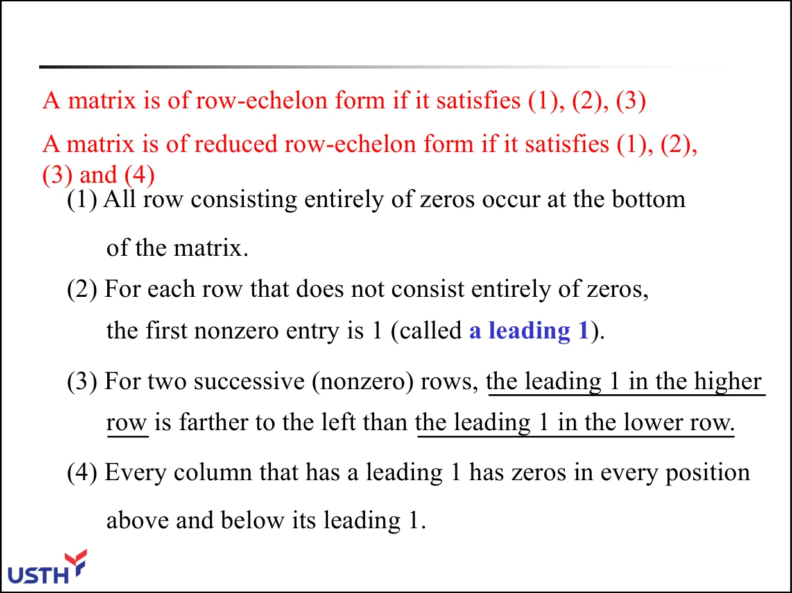
A matrix is in row-echelon form (REF) if: (1) all rows consisting entirely of zeros are at the bottom; (2) the first nonzero entry of each nonzero row is $1$ (a leading 1); (3) for two successive nonzero rows, the leading $1$ of the higher row is farther to the left than the leading $1$ of the lower row. It is in reduced row-echelon form (RREF) if it also satisfies (4): every column that has a leading $1$ has zeros everywhere else in that column (above and below).
Ma trận ở dạng bậc thang (REF) nếu: (1) mọi hàng toàn số $0$ nằm ở dưới cùng; (2) phần tử khác không đầu tiên của mỗi hàng khác không là $1$ (số 1 dẫn đầu); (3) với hai hàng khác không liên tiếp, số $1$ dẫn đầu của hàng trên nằm lệch trái hơn số $1$ dẫn đầu của hàng dưới. Nó ở dạng bậc thang rút gọn (RREF) nếu thỏa thêm (4): mọi cột có số $1$ dẫn đầu có số $0$ ở mọi vị trí khác của cột đó (trên và dưới).
Questions of the type "is this matrix in REF? RREF?" are among the easiest marks of the course: check conditions (1) to (4) one at a time.
Câu hỏi dạng "ma trận này có ở dạng REF? RREF?" là điểm dễ nhất của khóa học: kiểm tra lần lượt các điều kiện (1) đến (4).
Decide REF / RREF / neither: $A=\begin{bmatrix}1&2&0\\0&1&3\\0&0&1\end{bmatrix}$, $B=\begin{bmatrix}1&0&2\\0&1&3\end{bmatrix}$, $C=\begin{bmatrix}0&1&2\\1&0&3\end{bmatrix}$, $D=\begin{bmatrix}1&2&3\\0&0&0\\0&0&1\end{bmatrix}$.
Xác định REF / RREF / không: $A=\begin{bmatrix}1&2&0\\0&1&3\\0&0&1\end{bmatrix}$, $B=\begin{bmatrix}1&0&2\\0&1&3\end{bmatrix}$, $C=\begin{bmatrix}0&1&2\\1&0&3\end{bmatrix}$, $D=\begin{bmatrix}1&2&3\\0&0&0\\0&0&1\end{bmatrix}$.
Answer and solution · Đáp án và lời giải
Answer · Đáp án: $A$: REF only; $B$: RREF; $C$: neither; $D$: neither
$A$: leading $1$s step to the right, but column 2 has a $2$ above the leading $1$ of row 2 (so not RREF). $B$: RREF. $C$: the first row's leading $1$ is to the right of the second row's (violates (3)). $D$: the zero row is not at the bottom (violates (1)).
$A$: các số $1$ dẫn đầu dịch sang phải, nhưng cột 2 có số $2$ phía trên số $1$ dẫn đầu của hàng 2 (nên không phải RREF). $B$: RREF. $C$: số $1$ dẫn đầu của hàng một nằm bên phải hàng hai (vi phạm (3)). $D$: hàng không không ở dưới cùng (vi phạm (1)).
Example 4: recognising REF and RREF · Ví dụ 4: nhận dạng REF và RREF
★★★ Core · Cốt lõi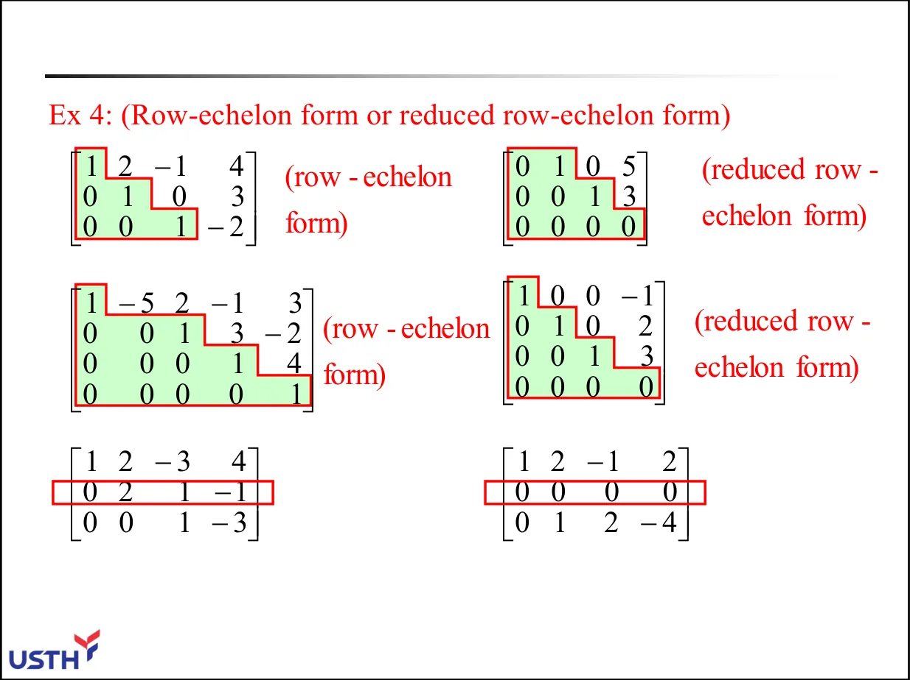
Row-echelon: $\begin{bmatrix}1&2&-1&4\\0&1&0&3\\0&0&1&-2\end{bmatrix}$ and $\begin{bmatrix}1&-5&2&-1&3\\0&0&1&3&-2\\0&0&0&1&4\\0&0&0&0&1\end{bmatrix}$ (leading $1$s form a staircase). Reduced: $\begin{bmatrix}0&1&0&5\\0&0&1&3\\0&0&0&0\end{bmatrix}$ and $\begin{bmatrix}1&0&0&-1\\0&1&0&2\\0&0&1&3\\0&0&0&0\end{bmatrix}$ (zeros above the leading $1$s too). The last two matrices on the slide are not in REF: in the first, the second row $(0,2,1,-1)$ starts with $2$, not $1$; in the second, the zero row is not at the bottom.
Dạng bậc thang: $\begin{bmatrix}1&2&-1&4\\0&1&0&3\\0&0&1&-2\end{bmatrix}$ và $\begin{bmatrix}1&-5&2&-1&3\\0&0&1&3&-2\\0&0&0&1&4\\0&0&0&0&1\end{bmatrix}$ (các số $1$ dẫn đầu tạo bậc thang). Dạng rút gọn: $\begin{bmatrix}0&1&0&5\\0&0&1&3\\0&0&0&0\end{bmatrix}$ và $\begin{bmatrix}1&0&0&-1\\0&1&0&2\\0&0&1&3\\0&0&0&0\end{bmatrix}$ (cả phía trên các số $1$ dẫn đầu cũng là số $0$). Hai ma trận cuối trên slide không ở dạng REF: ở ma trận đầu, hàng hai $(0,2,1,-1)$ bắt đầu bằng $2$ chứ không phải $1$; ở ma trận sau, hàng không không ở dưới cùng.
Is $\begin{bmatrix}1&0&0&-1\\0&1&0&2\\0&0&1&3\\0&0&0&0\end{bmatrix}$ in RREF? Change one entry to make it REF but not RREF.
Ma trận $\begin{bmatrix}1&0&0&-1\\0&1&0&2\\0&0&1&3\\0&0&0&0\end{bmatrix}$ có ở dạng RREF không? Đổi một phần tử để nó là REF nhưng không là RREF.
Answer and solution · Đáp án và lời giải
Answer · Đáp án: yes; e.g. change the $0$ in position $(1,2)$ to $5$
It satisfies (1)-(4): zero row at the bottom, leading $1$s on a staircase, zeros above and below each. Putting $5$ in position $(1,2)$ puts a nonzero entry above the leading $1$ of row 2: still REF (conditions (1)-(3)), no longer RREF (condition (4)).
Nó thỏa (1)-(4): hàng không ở dưới, các số $1$ dẫn đầu thành bậc thang, số $0$ phía trên và dưới mỗi số $1$. Đặt $5$ vào vị trí $(1,2)$ làm xuất hiện phần tử khác không phía trên số $1$ dẫn đầu của hàng 2: vẫn là REF (điều kiện (1)-(3)), không còn là RREF (điều kiện (4)).
Gaussian and Gauss-Jordan elimination · Khử Gauss và khử Gauss-Jordan
★★★ Core · Cốt lõi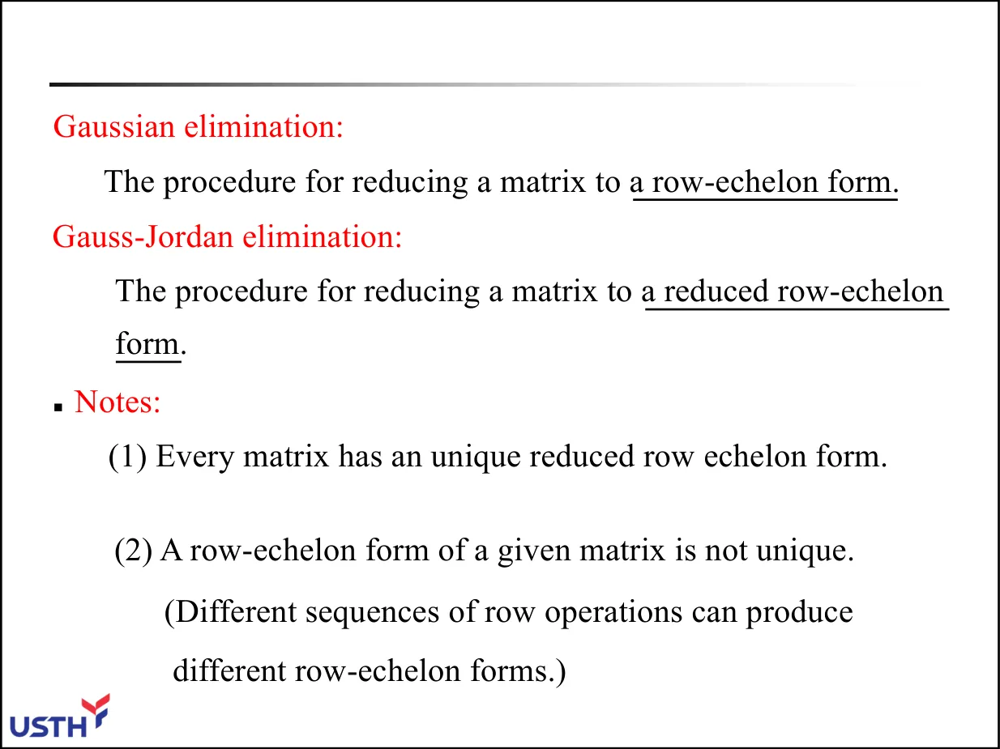
Gaussian elimination is the procedure for reducing a matrix to a row-echelon form; Gauss-Jordan elimination reduces it to the reduced row-echelon form. Notes: (1) every matrix has a unique reduced row-echelon form; (2) a row-echelon form of a given matrix is not unique: different sequences of row operations produce different (but equivalent) echelon forms. So RREF is the canonical answer, REF is not.
Khử Gauss là quy trình đưa ma trận về một dạng bậc thang; khử Gauss-Jordan đưa nó về dạng bậc thang rút gọn. Lưu ý: (1) mọi ma trận có dạng bậc thang rút gọn duy nhất; (2) dạng bậc thang của một ma trận không duy nhất: các dãy phép biến đổi khác nhau cho các dạng bậc thang khác nhau (nhưng tương đương). Vậy RREF là đáp án chuẩn, còn REF thì không.
Find two different row-echelon forms of $\begin{bmatrix}1&2\\3&4\end{bmatrix}$ and its reduced form.
Tìm hai dạng bậc thang khác nhau của $\begin{bmatrix}1&2\\3&4\end{bmatrix}$ và dạng rút gọn của nó.
Answer and solution · Đáp án và lời giải
Answer · Đáp án: e.g. $\begin{bmatrix}1&2\\0&1\end{bmatrix}$ and $\begin{bmatrix}1&\frac43\\0&1\end{bmatrix}$; RREF $=I_2$
Path 1: $R_2-3R_1$ gives $\begin{bmatrix}1&2\\0&-2\end{bmatrix}$, then $-\frac12R_2$: $\begin{bmatrix}1&2\\0&1\end{bmatrix}$. Path 2: swap rows, $\frac13R_1$, $R_2-R_1$, $\frac32R_2$: $\begin{bmatrix}1&\frac43\\0&1\end{bmatrix}$. Both are in REF, but they differ. Clearing the entry above the second leading $1$ gives $I_2$ from either.
Cách 1: $R_2-3R_1$ cho $\begin{bmatrix}1&2\\0&-2\end{bmatrix}$, rồi $-\frac12R_2$: $\begin{bmatrix}1&2\\0&1\end{bmatrix}$. Cách 2: đổi chỗ hai hàng, $\frac13R_1$, $R_2-R_1$, $\frac32R_2$: $\begin{bmatrix}1&\frac43\\0&1\end{bmatrix}$. Cả hai ở dạng REF nhưng khác nhau. Khử phần tử phía trên số $1$ dẫn đầu thứ hai thì từ cách nào cũng được $I_2$.
The procedure, first half · Quy trình, nửa đầu
★★★ Core · Cốt lõi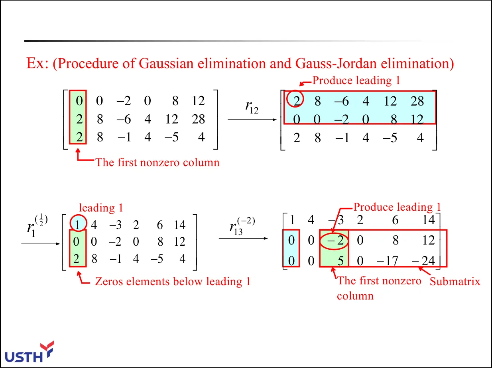
Reduce $\begin{bmatrix}0&0&-2&0&8&12\\2&8&-6&4&12&28\\2&8&-1&4&-5&4\end{bmatrix}$. (a) Find the first nonzero column (column 1). (b) Put a nonzero entry on top: $r_{12}$ swaps rows 1 and 2. (c) Make it a leading 1: $r_1^{(1/2)}$ gives $(1,4,-3,2,6,14)$. (d) Zero the entries below it: $r_{13}^{(-2)}$ gives row 3 $=(0,0,5,0,-17,-24)$. Now ignore row 1 and column 1 and repeat the same procedure on the submatrix that remains.
Rút gọn $\begin{bmatrix}0&0&-2&0&8&12\\2&8&-6&4&12&28\\2&8&-1&4&-5&4\end{bmatrix}$. (a) Tìm cột khác không đầu tiên (cột 1). (b) Đưa phần tử khác không lên trên: $r_{12}$ đổi chỗ hàng 1 và 2. (c) Biến nó thành số 1 dẫn đầu: $r_1^{(1/2)}$ cho $(1,4,-3,2,6,14)$. (d) Khử các phần tử bên dưới: $r_{13}^{(-2)}$ cho hàng 3 $=(0,0,5,0,-17,-24)$. Bây giờ bỏ qua hàng 1 và cột 1 và lặp lại cùng quy trình trên ma trận con còn lại.
The procedure, second half · Quy trình, nửa sau
★★★ Core · Cốt lõi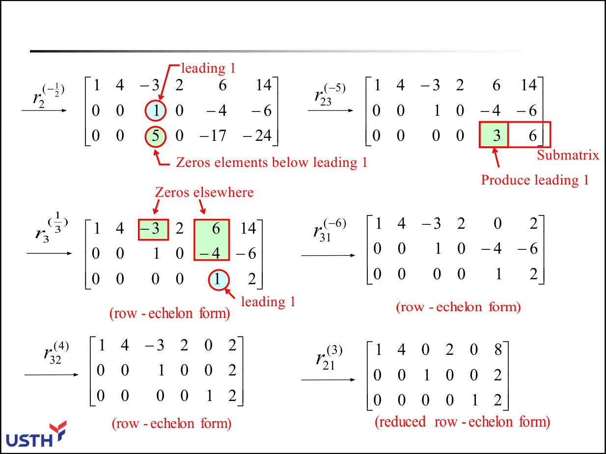
In the submatrix the first nonzero column is column 3: $r_2^{(-1/2)}$ makes the leading $1$ (row 2 $=(0,0,1,0,-4,-6)$) and $r_{23}^{(-5)}$ zeroes below it (row 3 $=(0,0,0,0,3,6)$). The new submatrix is row 3 only: $r_3^{(1/3)}$ gives the leading $1$, $(0,0,0,0,1,2)$. This is a row-echelon form (Gaussian elimination is done). For Gauss-Jordan continue upwards: $r_{31}^{(-6)}$, $r_{32}^{(4)}$, $r_{21}^{(3)}$ clear the entries above the leading $1$s and give the reduced form $\begin{bmatrix}1&4&0&2&0&8\\0&0&1&0&0&2\\0&0&0&0&1&2\end{bmatrix}$.
Trong ma trận con, cột khác không đầu tiên là cột 3: $r_2^{(-1/2)}$ tạo số $1$ dẫn đầu (hàng 2 $=(0,0,1,0,-4,-6)$) và $r_{23}^{(-5)}$ khử bên dưới (hàng 3 $=(0,0,0,0,3,6)$). Ma trận con mới chỉ còn hàng 3: $r_3^{(1/3)}$ cho số $1$ dẫn đầu, $(0,0,0,0,1,2)$. Đây là dạng bậc thang (khử Gauss xong). Với Gauss-Jordan tiếp tục đi lên: $r_{31}^{(-6)}$, $r_{32}^{(4)}$, $r_{21}^{(3)}$ khử các phần tử phía trên các số $1$ dẫn đầu và cho dạng rút gọn $\begin{bmatrix}1&4&0&2&0&8\\0&0&1&0&0&2\\0&0&0&0&1&2\end{bmatrix}$.
Check the slide's final matrix: the RREF of $\begin{bmatrix}0&0&-2&0&8&12\\2&8&-6&4&12&28\\2&8&-1&4&-5&4\end{bmatrix}$ and which columns hold the leading $1$s.
Kiểm tra ma trận cuối của slide: RREF của $\begin{bmatrix}0&0&-2&0&8&12\\2&8&-6&4&12&28\\2&8&-1&4&-5&4\end{bmatrix}$ và các cột chứa số $1$ dẫn đầu.
Answer and solution · Đáp án và lời giải
Answer · Đáp án: RREF as on the slide; leading $1$s in columns $1,3,5$
The reduction above gives $\begin{bmatrix}1&4&0&2&0&8\\0&0&1&0&0&2\\0&0&0&0&1&2\end{bmatrix}$; the leading $1$s (pivots) are in columns $1,3,5$, so $x_1,x_3,x_5$ are the leading variables and $x_2,x_4$ would be free if this were a system.
Phép rút gọn trên cho $\begin{bmatrix}1&4&0&2&0&8\\0&0&1&0&0&2\\0&0&0&0&1&2\end{bmatrix}$; các số $1$ dẫn đầu (pivot) nằm ở cột $1,3,5$, nên $x_1,x_3,x_5$ là biến dẫn đầu còn $x_2,x_4$ sẽ là biến tự do nếu đây là một hệ.
Example 7: Gauss-Jordan, one solution · Ví dụ 7: Gauss-Jordan, một nghiệm
★★★ Core · Cốt lõi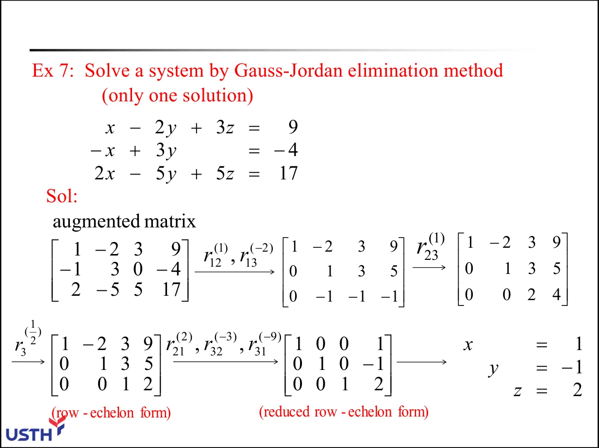
Solve $x-2y+3z=9$, $-x+3y=-4$, $2x-5y+5z=17$ by Gauss-Jordan. Augmented matrix $\begin{bmatrix}1&-2&3&9\\-1&3&0&-4\\2&-5&5&17\end{bmatrix}$. $r_{12}^{(1)},r_{13}^{(-2)}$ clear below the first pivot; $r_{23}^{(1)}$ gives $\begin{bmatrix}1&-2&3&9\\0&1&3&5\\0&0&2&4\end{bmatrix}$; $r_3^{(1/2)}$ gives the REF with last row $(0,0,1,2)$; then $r_{21}^{(2)},r_{32}^{(-3)},r_{31}^{(-9)}$ give the RREF $\begin{bmatrix}1&0&0&1\\0&1&0&-1\\0&0&1&2\end{bmatrix}$, i.e. $x=1$, $y=-1$, $z=2$. With RREF there is no back substitution: the answer can be read off.
Giải $x-2y+3z=9$, $-x+3y=-4$, $2x-5y+5z=17$ bằng Gauss-Jordan. Ma trận mở rộng $\begin{bmatrix}1&-2&3&9\\-1&3&0&-4\\2&-5&5&17\end{bmatrix}$. $r_{12}^{(1)},r_{13}^{(-2)}$ khử bên dưới pivot đầu; $r_{23}^{(1)}$ cho $\begin{bmatrix}1&-2&3&9\\0&1&3&5\\0&0&2&4\end{bmatrix}$; $r_3^{(1/2)}$ cho REF với hàng cuối $(0,0,1,2)$; rồi $r_{21}^{(2)},r_{32}^{(-3)},r_{31}^{(-9)}$ cho RREF $\begin{bmatrix}1&0&0&1\\0&1&0&-1\\0&0&1&2\end{bmatrix}$, tức $x=1$, $y=-1$, $z=2$. Với RREF không cần thế ngược: đọc ngay đáp số.
Solve $x+y+z=6$, $2x-y+z=3$, $x+2y-z=2$ by Gauss-Jordan.
Giải $x+y+z=6$, $2x-y+z=3$, $x+2y-z=2$ bằng Gauss-Jordan.
Answer and solution · Đáp án và lời giải
Answer · Đáp án: $(x,y,z)=(1,2,3)$
$\begin{bmatrix}1&1&1&6\\2&-1&1&3\\1&2&-1&2\end{bmatrix}\to\begin{bmatrix}1&0&0&1\\0&1&0&2\\0&0&1&3\end{bmatrix}$ Steps: $R_2-2R_1,\ R_3-R_1$ give rows $(0,-3,-1,-9)$ and $(0,1,-2,-4)$; swap them; $R_3+3R_2$ gives $(0,0,-7,-21)$, then $-\frac17R_3$ gives $(0,0,1,3)$; clear above with $R_2+2R_3,\ R_1-R_3,\ R_1-R_2$. Check in the second equation: $2-2+3=3$ ✓.
$\begin{bmatrix}1&1&1&6\\2&-1&1&3\\1&2&-1&2\end{bmatrix}\to\begin{bmatrix}1&0&0&1\\0&1&0&2\\0&0&1&3\end{bmatrix}$ Các bước: $R_2-2R_1,\ R_3-R_1$ cho các hàng $(0,-3,-1,-9)$ và $(0,1,-2,-4)$; đổi chỗ hai hàng; $R_3+3R_2$ cho $(0,0,-7,-21)$, rồi $-\frac17R_3$ cho $(0,0,1,3)$; khử phía trên bằng $R_2+2R_3,\ R_1-R_3,\ R_1-R_2$. Kiểm tra ở phương trình thứ hai: $2-2+3=3$ ✓.
Example 8: Gauss-Jordan, infinitely many solutions · Ví dụ 8: Gauss-Jordan, vô số nghiệm
★★★ Core · Cốt lõi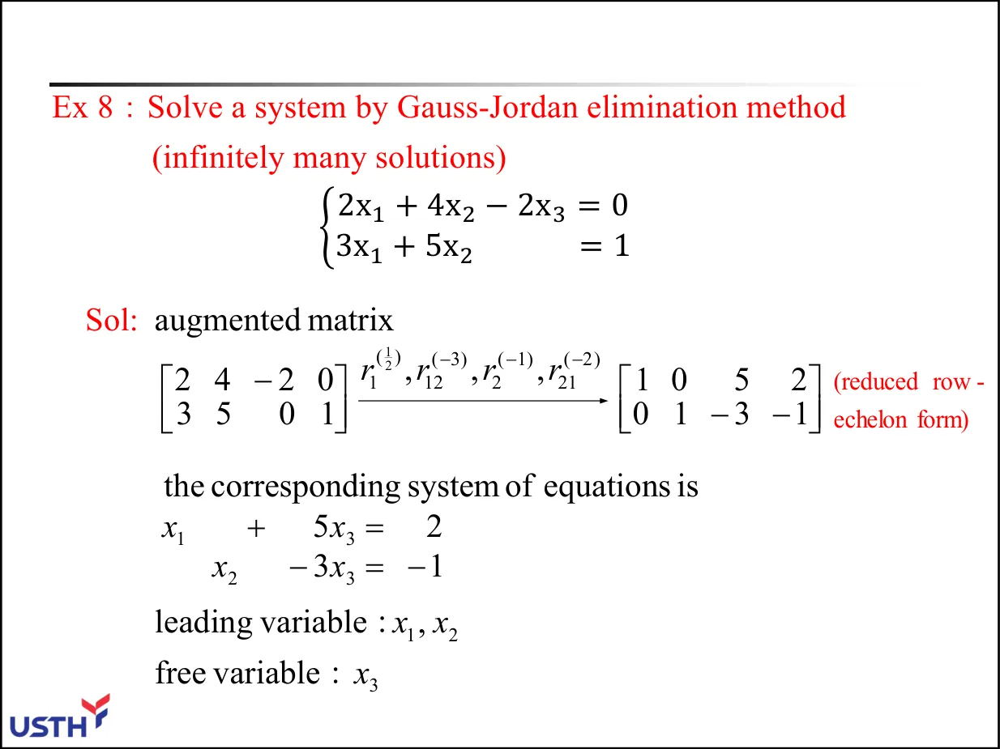
Solve $2x_1+4x_2-2x_3=0$, $3x_1+5x_2=1$. Augmented matrix $\begin{bmatrix}2&4&-2&0\\3&5&0&1\end{bmatrix}$. The sequence $r_1^{(1/2)},r_{12}^{(-3)},r_2^{(-1)},r_{21}^{(-2)}$ gives the RREF $\begin{bmatrix}1&0&5&2\\0&1&-3&-1\end{bmatrix}$. The corresponding system is $x_1+5x_3=2$, $x_2-3x_3=-1$. Leading variables: $x_1,x_2$ (the columns with leading $1$s). Free variable: $x_3$ (the column without one).
Giải $2x_1+4x_2-2x_3=0$, $3x_1+5x_2=1$. Ma trận mở rộng $\begin{bmatrix}2&4&-2&0\\3&5&0&1\end{bmatrix}$. Dãy $r_1^{(1/2)},r_{12}^{(-3)},r_2^{(-1)},r_{21}^{(-2)}$ cho RREF $\begin{bmatrix}1&0&5&2\\0&1&-3&-1\end{bmatrix}$. Hệ tương ứng là $x_1+5x_3=2$, $x_2-3x_3=-1$. Biến dẫn đầu: $x_1,x_2$ (các cột có số $1$ dẫn đầu). Biến tự do: $x_3$ (cột không có).
Leading versus free variables is the vocabulary for rank and dimension later in the course (rank = number of leading variables; nullity = number of free variables).
Biến dẫn đầu và biến tự do là từ vựng cho hạng và số chiều ở phần sau của khóa học (hạng = số biến dẫn đầu; số chiều hạch = số biến tự do).
Which columns hold the leading $1$s in the RREF of $\begin{bmatrix}2&4&-2&0\\3&5&0&1\end{bmatrix}$, and why must the system have infinitely many solutions?
Cột nào chứa số $1$ dẫn đầu trong RREF của $\begin{bmatrix}2&4&-2&0\\3&5&0&1\end{bmatrix}$, và vì sao hệ phải có vô số nghiệm?
Answer and solution · Đáp án và lời giải
Answer · Đáp án: columns $1,2$; the system is consistent and has a free variable ($3$ unknowns, rank $2$)
RREF $=\begin{bmatrix}1&0&5&2\\0&1&-3&-1\end{bmatrix}$, pivots in columns $1,2$. It has no row $[0\ 0\ 0\mid c]$ with $c\ne0$, so it is consistent, and the unpivoted column $3$ is a free variable: infinitely many solutions.
RREF $=\begin{bmatrix}1&0&5&2\\0&1&-3&-1\end{bmatrix}$, pivot ở cột $1,2$. Không có hàng $[0\ 0\ 0\mid c]$ với $c\ne0$ nên hệ nhất quán, và cột $3$ không có pivot là biến tự do: vô số nghiệm.
Example 8: reading the solution set · Ví dụ 8: đọc tập nghiệm
★★★ Core · Cốt lõi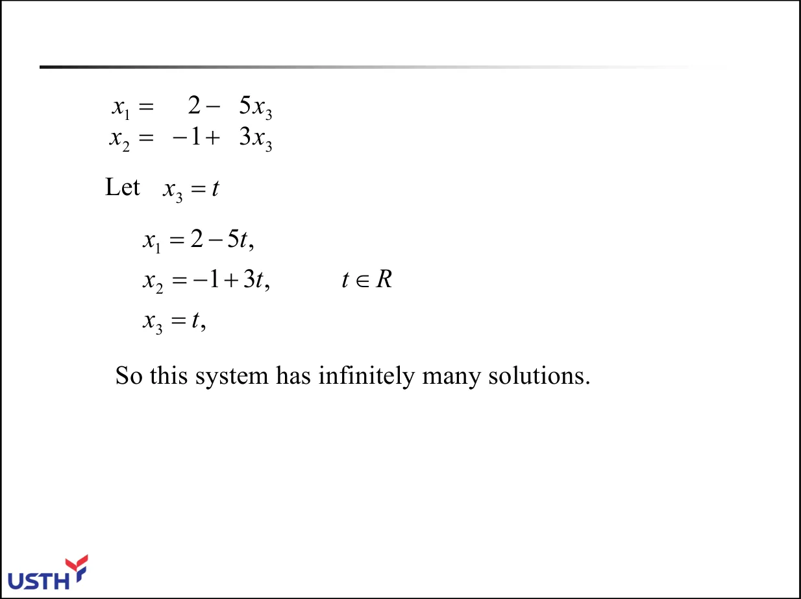
Solve for the leading variables in terms of the free one: $x_1=2-5x_3$, $x_2=-1+3x_3$. Let $x_3=t$: $x_1=2-5t$, $x_2=-1+3t$, $x_3=t$, $t\in\mathbb R$. The system has infinitely many solutions, one for every real $t$ (at $t=0$: $(2,-1,0)$). Check one: $t=1$ gives $(-3,2,1)$ and $2(-3)+4(2)-2(1)=0$ ✓, $3(-3)+5(2)=1$ ✓.
Giải các biến dẫn đầu theo biến tự do: $x_1=2-5x_3$, $x_2=-1+3x_3$. Đặt $x_3=t$: $x_1=2-5t$, $x_2=-1+3t$, $x_3=t$, $t\in\mathbb R$. Hệ có vô số nghiệm, mỗi $t$ thực một nghiệm (với $t=0$: $(2,-1,0)$). Kiểm tra một nghiệm: $t=1$ cho $(-3,2,1)$ và $2(-3)+4(2)-2(1)=0$ ✓, $3(-3)+5(2)=1$ ✓.
Solve $x+2y-z=3$, $2x+4y-2z=6$, $x-y+z=0$ and give the solution set.
Giải $x+2y-z=3$, $2x+4y-2z=6$, $x-y+z=0$ và cho tập nghiệm.
Answer and solution · Đáp án và lời giải
Answer · Đáp án: $(x,y,z)=(t,\ 3-2t,\ 3-3t)$, $t\in\mathbb R$
$R_2-2R_1$ gives $0=0$ (redundant). From $x-y+z=0$: $z=y-x$; then $x+2y-(y-x)=2x+y=3$, so $y=3-2x$ and $z=3-3x$. With $x=t$ the check of the first equation: $t+6-4t-3+3t=3$ ✓.
$R_2-2R_1$ cho $0=0$ (thừa). Từ $x-y+z=0$: $z=y-x$; rồi $x+2y-(y-x)=2x+y=3$, nên $y=3-2x$ và $z=3-3x$. Với $x=t$ kiểm tra phương trình đầu: $t+6-4t-3+3t=3$ ✓.
Homogeneous systems · Hệ thuần nhất
★★★ Core · Cốt lõi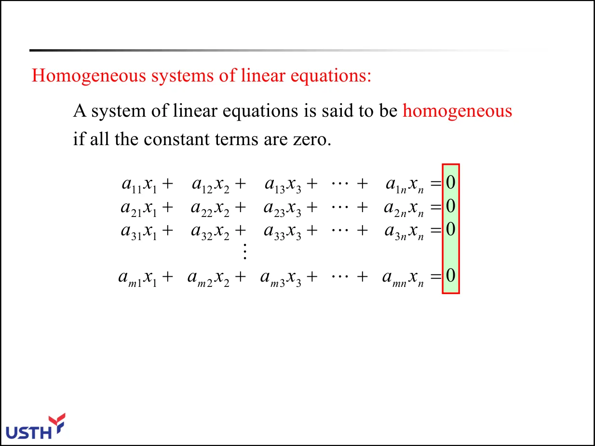
A system is homogeneous if all the constant terms are zero: $Ax=0$. Every homogeneous system has the trivial solution, so it is never inconsistent. Because the right-hand column is all zeros it stays zero under row operations: you may reduce $A$ alone instead of $[A\mid0]$.
Hệ thuần nhất nếu mọi hằng số tự do bằng không: $Ax=0$. Mọi hệ thuần nhất đều có nghiệm tầm thường nên không bao giờ vô nghiệm. Vì cột vế phải toàn số không và vẫn là $0$ qua các phép biến đổi hàng nên có thể chỉ rút gọn $A$ thay vì $[A\mid0]$.
Is $x=(1,-2,1)$ a solution of the homogeneous system $3x+2y+z=0$, $x+y+z=0$?
$x=(1,-2,1)$ có là nghiệm của hệ thuần nhất $3x+2y+z=0$, $x+y+z=0$ không?
Answer and solution · Đáp án và lời giải
Answer · Đáp án: yes
$3(1)+2(-2)+1=0$ and $1-2+1=0$ ✓. In matrix form $A\begin{bmatrix}1\\-2\\1\end{bmatrix}=\begin{bmatrix}0\\0\end{bmatrix}$.
$3(1)+2(-2)+1=0$ và $1-2+1=0$ ✓. Dạng ma trận $A\begin{bmatrix}1\\-2\\1\end{bmatrix}=\begin{bmatrix}0\\0\end{bmatrix}$.
Trivial and nontrivial solutions · Nghiệm tầm thường và không tầm thường
★★★ Core · Cốt lõi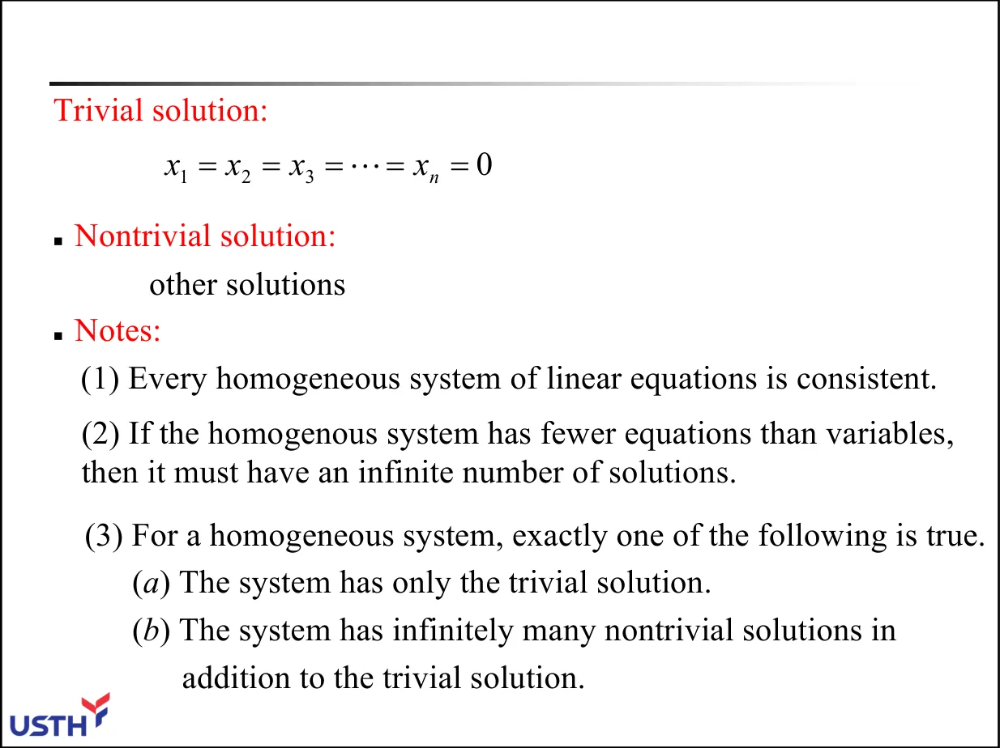
The trivial solution is $x_1=x_2=\cdots=x_n=0$; any other solution is nontrivial. Notes: (1) every homogeneous system is consistent; (2) if it has fewer equations than variables it must have infinitely many solutions (at least one free variable); (3) exactly one of these holds: only the trivial solution, or infinitely many nontrivial solutions in addition to it.
Nghiệm tầm thường là $x_1=x_2=\cdots=x_n=0$; mọi nghiệm khác là không tầm thường. Lưu ý: (1) mọi hệ thuần nhất đều nhất quán; (2) nếu số phương trình ít hơn số biến thì nó phải có vô số nghiệm (có ít nhất một biến tự do); (3) đúng một trong hai điều xảy ra: chỉ có nghiệm tầm thường, hoặc có vô số nghiệm không tầm thường ngoài nghiệm đó.
Note (2) returns many times: it is the first statement of the form "more unknowns than equations forces dependence" (later: more than $n$ vectors in $\mathbb R^n$ are dependent).
Lưu ý (2) quay lại nhiều lần: đó là phát biểu đầu tiên dạng "nhiều ẩn hơn phương trình thì buộc phải phụ thuộc" (sau này: hơn $n$ vectơ trong $\mathbb R^n$ thì phụ thuộc tuyến tính).
A homogeneous system has $3$ equations in $5$ unknowns. Why does it have a nontrivial solution? Check on $\begin{bmatrix}1&2&3&4&5\\0&1&1&1&1\\1&0&1&0&1\end{bmatrix}$.
Một hệ thuần nhất có $3$ phương trình $5$ ẩn. Vì sao nó có nghiệm không tầm thường? Kiểm tra trên $\begin{bmatrix}1&2&3&4&5\\0&1&1&1&1\\1&0&1&0&1\end{bmatrix}$.
Answer and solution · Đáp án và lời giải
Answer · Đáp án: at most $3$ pivots among $5$ columns, so at least $2$ free variables
The rank is at most the number of rows, $3$, so at most $3$ of the $5$ columns can be pivot columns and at least $2$ variables are free, giving infinitely many solutions. For this matrix the solution space has dimension $5-\operatorname{rank}\ge2$.
Hạng không vượt quá số hàng, $3$, nên nhiều nhất $3$ trong $5$ cột là cột pivot và có ít nhất $2$ biến tự do, cho vô số nghiệm. Với ma trận này không gian nghiệm có số chiều $5-\operatorname{rank}\ge2$.
Example 9: solving a homogeneous system · Ví dụ 9: giải hệ thuần nhất
★★★ Core · Cốt lõi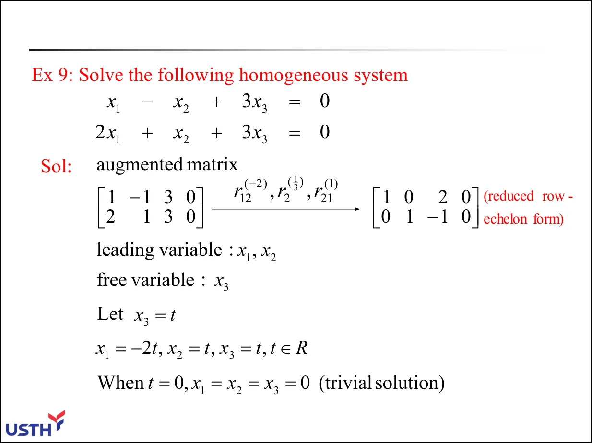
Solve $x_1-x_2+3x_3=0$, $2x_1+x_2+3x_3=0$. The augmented matrix $\begin{bmatrix}1&-1&3&0\\2&1&3&0\end{bmatrix}$ reduces (with $r_{12}^{(-2)},r_2^{(1/3)},r_{21}^{(1)}$) to the RREF $\begin{bmatrix}1&0&2&0\\0&1&-1&0\end{bmatrix}$. Leading variables $x_1,x_2$, free variable $x_3=t$: $x_1=-2t$, $x_2=t$, $x_3=t$, $t\in\mathbb R$. For $t=0$ we get the trivial solution; every other $t$ gives a nontrivial one. (Two equations, three unknowns, as predicted by note (2).)
Giải $x_1-x_2+3x_3=0$, $2x_1+x_2+3x_3=0$. Ma trận mở rộng $\begin{bmatrix}1&-1&3&0\\2&1&3&0\end{bmatrix}$ rút gọn (bằng $r_{12}^{(-2)},r_2^{(1/3)},r_{21}^{(1)}$) về RREF $\begin{bmatrix}1&0&2&0\\0&1&-1&0\end{bmatrix}$. Biến dẫn đầu $x_1,x_2$, biến tự do $x_3=t$: $x_1=-2t$, $x_2=t$, $x_3=t$, $t\in\mathbb R$. Với $t=0$ ta được nghiệm tầm thường; mọi $t$ khác cho một nghiệm không tầm thường. (Hai phương trình, ba ẩn, đúng như lưu ý (2).)
Solve the homogeneous system $x+2y+z=0$, $2x+5y+3z=0$.
Giải hệ thuần nhất $x+2y+z=0$, $2x+5y+3z=0$.
Answer and solution · Đáp án và lời giải
Answer · Đáp án: $(x,y,z)=t\,(1,-1,1)$, $t\in\mathbb R$
$R_2-2R_1$: $y+z=0$, so $y=-z$; then $x=-2y-z=2z-z=z$. With $z=t$: $(t,-t,t)$. Check: $t-2t+t=0$ and $2t-5t+3t=0$ ✓.
$R_2-2R_1$: $y+z=0$, nên $y=-z$; rồi $x=-2y-z=2z-z=z$. Với $z=t$: $(t,-t,t)$. Kiểm tra: $t-2t+t=0$ và $2t-5t+3t=0$ ✓.